9.10 Proyecto Integrador#
Predicción de default en Lending Club#
import itertools
import time
import warnings
from pathlib import Path
import numpy as np
import pandas as pd
import matplotlib.pyplot as plt
import seaborn as sns
from scipy import stats
try:
import missingno as msno
MSNO_OK = True
except Exception as exc:
MSNO_OK = False
print(f"[aviso] missingno no disponible ({exc}); se usa un heatmap propio como respaldo.")
warnings.filterwarnings("ignore", category=FutureWarning)
warnings.filterwarnings("ignore", category=RuntimeWarning)
sns.set_theme(style="whitegrid")
pd.set_option("display.max_columns", 200)
pd.set_option("display.max_rows", 20)
CLASS_LABELS = {0: "No Charged Off (0)", 1: "Charged Off (1)"} # nombres legibles para gráficos y tablas
RANDOM_STATE = 42 # semilla fija: mismo resultado cada vez que se toma una muestra aleatoria
9.10.2. Dataset#
DATA_SOURCE = "wordsforthewise/lending-club"
import kagglehub
dataset_path = kagglehub.dataset_download(DATA_SOURCE)
print("Dataset descargado en:", dataset_path)
csv_candidates = [p for p in Path(dataset_path).rglob("*.csv") if p.is_file() and "accepted" in p.name.lower()]
if not csv_candidates:
raise FileNotFoundError("No se encontró un CSV 'accepted' dentro del dataset descargado.")
csv_path = csv_candidates[0]
print("Archivo usado:", csv_path)
C:\Users\juand\miniconda3\envs\ml_venv\lib\site-packages\tqdm\auto.py:21: TqdmWarning: IProgress not found. Please update jupyter and ipywidgets. See https://ipywidgets.readthedocs.io/en/stable/user_install.html
from .autonotebook import tqdm as notebook_tqdm
Warning: Looks like you're using an outdated `kagglehub` version (installed: 0.3.13), please consider upgrading to the latest version (1.0.2).
Dataset descargado en: C:\Users\juand\.cache\kagglehub\datasets\wordsforthewise\lending-club\versions\3
Archivo usado: C:\Users\juand\.cache\kagglehub\datasets\wordsforthewise\lending-club\versions\3\accepted_2007_to_2018q4.csv\accepted_2007_to_2018Q4.csv
t0 = time.perf_counter() # marca de tiempo antes de leer, para medir cuánto tarda pandas
df = pd.read_csv(csv_path, low_memory=False, dtype={"id": str})
t_pandas = time.perf_counter() - t0 # tiempo total de lectura con pandas
print(f"pandas: {len(df):,} filas x {df.shape[1]} columnas leídas en {t_pandas:,.1f} s")
---------------------------------------------------------------------------
ParserError Traceback (most recent call last)
Cell In[3], line 3
1 t0 = time.perf_counter() # marca de tiempo antes de leer, para medir cuánto tarda pandas
----> 3 df = pd.read_csv(csv_path, low_memory=False, dtype={"id": str})
4 t_pandas = time.perf_counter() - t0 # tiempo total de lectura con pandas
5 print(f"pandas: {len(df):,} filas x {df.shape[1]} columnas leídas en {t_pandas:,.1f} s")
File ~\miniconda3\envs\ml_venv\lib\site-packages\pandas\io\parsers\readers.py:1026, in read_csv(filepath_or_buffer, sep, delimiter, header, names, index_col, usecols, dtype, engine, converters, true_values, false_values, skipinitialspace, skiprows, skipfooter, nrows, na_values, keep_default_na, na_filter, verbose, skip_blank_lines, parse_dates, infer_datetime_format, keep_date_col, date_parser, date_format, dayfirst, cache_dates, iterator, chunksize, compression, thousands, decimal, lineterminator, quotechar, quoting, doublequote, escapechar, comment, encoding, encoding_errors, dialect, on_bad_lines, delim_whitespace, low_memory, memory_map, float_precision, storage_options, dtype_backend)
1013 kwds_defaults = _refine_defaults_read(
1014 dialect,
1015 delimiter,
(...)
1022 dtype_backend=dtype_backend,
1023 )
1024 kwds.update(kwds_defaults)
-> 1026 return _read(filepath_or_buffer, kwds)
File ~\miniconda3\envs\ml_venv\lib\site-packages\pandas\io\parsers\readers.py:626, in _read(filepath_or_buffer, kwds)
623 return parser
625 with parser:
--> 626 return parser.read(nrows)
File ~\miniconda3\envs\ml_venv\lib\site-packages\pandas\io\parsers\readers.py:1923, in TextFileReader.read(self, nrows)
1916 nrows = validate_integer("nrows", nrows)
1917 try:
1918 # error: "ParserBase" has no attribute "read"
1919 (
1920 index,
1921 columns,
1922 col_dict,
-> 1923 ) = self._engine.read( # type: ignore[attr-defined]
1924 nrows
1925 )
1926 except Exception:
1927 self.close()
File ~\miniconda3\envs\ml_venv\lib\site-packages\pandas\io\parsers\c_parser_wrapper.py:239, in CParserWrapper.read(self, nrows)
236 data = _concatenate_chunks(chunks)
238 else:
--> 239 data = self._reader.read(nrows)
240 except StopIteration:
241 if self._first_chunk:
File pandas/_libs/parsers.pyx:820, in pandas._libs.parsers.TextReader.read()
File pandas/_libs/parsers.pyx:914, in pandas._libs.parsers.TextReader._read_rows()
File pandas/_libs/parsers.pyx:891, in pandas._libs.parsers.TextReader._check_tokenize_status()
File pandas/_libs/parsers.pyx:2061, in pandas._libs.parsers.raise_parser_error()
ParserError: Error tokenizing data. C error: out of memory
9.10.3. Target#
df["default"] = df["loan_status"].apply(lambda x: 1 if x == "Charged Off" else 0)
show_estados = df["loan_status"].value_counts(dropna=False)
show_estados_pct = 100 * show_estados / len(df)
display(pd.DataFrame({"registros": show_estados, "porcentaje": show_estados_pct,
"clase_default": [1 if e == "Charged Off" else 0 for e in show_estados.index]}))
print("Etiquetas usadas en todo el proyecto:", CLASS_LABELS)
print(f"\nAviso metodológico: bajo la fórmula literal del enunciado, todo estado distinto de "
f"'Charged Off' (incluyendo préstamos 'Current', aún vigentes y sin resolver) queda como default=0. "
f"Esto se deja documentado aquí y se retoma en el resumen ejecutivo (9.10.4.1.5).")
| registros | porcentaje | clase_default | |
|---|---|---|---|
| loan_status | |||
| Fully Paid | 1076751 | 47.629076 | 0 |
| Current | 878317 | 38.851533 | 0 |
| Charged Off | 268559 | 11.879457 | 1 |
| Late (31-120 days) | 21467 | 0.949573 | 0 |
| In Grace Period | 8436 | 0.373159 | 0 |
| Late (16-30 days) | 4349 | 0.192374 | 0 |
| Does not meet the credit policy. Status:Fully Paid | 1988 | 0.087937 | 0 |
| Does not meet the credit policy. Status:Charged Off | 761 | 0.033662 | 0 |
| Default | 40 | 0.001769 | 0 |
| NaN | 33 | 0.001460 | 0 |
Etiquetas usadas en todo el proyecto: {0: 'No Charged Off (0)', 1: 'Charged Off (1)'}
Aviso metodológico: bajo la fórmula literal del enunciado, todo estado distinto de 'Charged Off' (incluyendo préstamos 'Current', aún vigentes y sin resolver) queda como default=0. Esto se deja documentado aquí y se retoma en el resumen ejecutivo (9.10.4.1.5).
9.10.4.1. Exploración de datos (EDA)#
9.10.4.1.1. Carga inicial y visión general#
# 9.10.4.1.1 — Carga inicial y visión general: primeras y últimas filas, y dimensión del dataset.
display(df.head())
display(df.tail())
print(f"Dimensión del dataset: {df.shape[0]:,} filas x {df.shape[1]} columnas")
| id | member_id | loan_amnt | funded_amnt | funded_amnt_inv | term | int_rate | installment | grade | sub_grade | emp_title | emp_length | home_ownership | annual_inc | verification_status | issue_d | loan_status | pymnt_plan | url | desc | purpose | title | zip_code | addr_state | dti | delinq_2yrs | earliest_cr_line | fico_range_low | fico_range_high | inq_last_6mths | mths_since_last_delinq | mths_since_last_record | open_acc | pub_rec | revol_bal | revol_util | total_acc | initial_list_status | out_prncp | out_prncp_inv | total_pymnt | total_pymnt_inv | total_rec_prncp | total_rec_int | total_rec_late_fee | recoveries | collection_recovery_fee | last_pymnt_d | last_pymnt_amnt | next_pymnt_d | last_credit_pull_d | last_fico_range_high | last_fico_range_low | collections_12_mths_ex_med | mths_since_last_major_derog | policy_code | application_type | annual_inc_joint | dti_joint | verification_status_joint | acc_now_delinq | tot_coll_amt | tot_cur_bal | open_acc_6m | open_act_il | open_il_12m | open_il_24m | mths_since_rcnt_il | total_bal_il | il_util | open_rv_12m | open_rv_24m | max_bal_bc | all_util | total_rev_hi_lim | inq_fi | total_cu_tl | inq_last_12m | acc_open_past_24mths | avg_cur_bal | bc_open_to_buy | bc_util | chargeoff_within_12_mths | delinq_amnt | mo_sin_old_il_acct | mo_sin_old_rev_tl_op | mo_sin_rcnt_rev_tl_op | mo_sin_rcnt_tl | mort_acc | mths_since_recent_bc | mths_since_recent_bc_dlq | mths_since_recent_inq | mths_since_recent_revol_delinq | num_accts_ever_120_pd | num_actv_bc_tl | num_actv_rev_tl | num_bc_sats | num_bc_tl | num_il_tl | num_op_rev_tl | num_rev_accts | num_rev_tl_bal_gt_0 | num_sats | num_tl_120dpd_2m | num_tl_30dpd | num_tl_90g_dpd_24m | num_tl_op_past_12m | pct_tl_nvr_dlq | percent_bc_gt_75 | pub_rec_bankruptcies | tax_liens | tot_hi_cred_lim | total_bal_ex_mort | total_bc_limit | total_il_high_credit_limit | revol_bal_joint | sec_app_fico_range_low | sec_app_fico_range_high | sec_app_earliest_cr_line | sec_app_inq_last_6mths | sec_app_mort_acc | sec_app_open_acc | sec_app_revol_util | sec_app_open_act_il | sec_app_num_rev_accts | sec_app_chargeoff_within_12_mths | sec_app_collections_12_mths_ex_med | sec_app_mths_since_last_major_derog | hardship_flag | hardship_type | hardship_reason | hardship_status | deferral_term | hardship_amount | hardship_start_date | hardship_end_date | payment_plan_start_date | hardship_length | hardship_dpd | hardship_loan_status | orig_projected_additional_accrued_interest | hardship_payoff_balance_amount | hardship_last_payment_amount | disbursement_method | debt_settlement_flag | debt_settlement_flag_date | settlement_status | settlement_date | settlement_amount | settlement_percentage | settlement_term | default | |
|---|---|---|---|---|---|---|---|---|---|---|---|---|---|---|---|---|---|---|---|---|---|---|---|---|---|---|---|---|---|---|---|---|---|---|---|---|---|---|---|---|---|---|---|---|---|---|---|---|---|---|---|---|---|---|---|---|---|---|---|---|---|---|---|---|---|---|---|---|---|---|---|---|---|---|---|---|---|---|---|---|---|---|---|---|---|---|---|---|---|---|---|---|---|---|---|---|---|---|---|---|---|---|---|---|---|---|---|---|---|---|---|---|---|---|---|---|---|---|---|---|---|---|---|---|---|---|---|---|---|---|---|---|---|---|---|---|---|---|---|---|---|---|---|---|---|---|---|---|---|---|---|---|
| 0 | 68407277 | NaN | 3600.0 | 3600.0 | 3600.0 | 36 months | 13.99 | 123.03 | C | C4 | leadman | 10+ years | MORTGAGE | 55000.0 | Not Verified | Dec-2015 | Fully Paid | n | https://lendingclub.com/browse/loanDetail.acti... | NaN | debt_consolidation | Debt consolidation | 190xx | PA | 5.91 | 0.0 | Aug-2003 | 675.0 | 679.0 | 1.0 | 30.0 | NaN | 7.0 | 0.0 | 2765.0 | 29.7 | 13.0 | w | 0.00 | 0.00 | 4421.723917 | 4421.72 | 3600.00 | 821.72 | 0.0 | 0.0 | 0.0 | Jan-2019 | 122.67 | NaN | Mar-2019 | 564.0 | 560.0 | 0.0 | 30.0 | 1.0 | Individual | NaN | NaN | NaN | 0.0 | 722.0 | 144904.0 | 2.0 | 2.0 | 0.0 | 1.0 | 21.0 | 4981.0 | 36.0 | 3.0 | 3.0 | 722.0 | 34.0 | 9300.0 | 3.0 | 1.0 | 4.0 | 4.0 | 20701.0 | 1506.0 | 37.2 | 0.0 | 0.0 | 148.0 | 128.0 | 3.0 | 3.0 | 1.0 | 4.0 | 69.0 | 4.0 | 69.0 | 2.0 | 2.0 | 4.0 | 2.0 | 5.0 | 3.0 | 4.0 | 9.0 | 4.0 | 7.0 | 0.0 | 0.0 | 0.0 | 3.0 | 76.9 | 0.0 | 0.0 | 0.0 | 178050.0 | 7746.0 | 2400.0 | 13734.0 | NaN | NaN | NaN | NaN | NaN | NaN | NaN | NaN | NaN | NaN | NaN | NaN | NaN | N | NaN | NaN | NaN | NaN | NaN | NaN | NaN | NaN | NaN | NaN | NaN | NaN | NaN | NaN | Cash | N | NaN | NaN | NaN | NaN | NaN | NaN | 0 |
| 1 | 68355089 | NaN | 24700.0 | 24700.0 | 24700.0 | 36 months | 11.99 | 820.28 | C | C1 | Engineer | 10+ years | MORTGAGE | 65000.0 | Not Verified | Dec-2015 | Fully Paid | n | https://lendingclub.com/browse/loanDetail.acti... | NaN | small_business | Business | 577xx | SD | 16.06 | 1.0 | Dec-1999 | 715.0 | 719.0 | 4.0 | 6.0 | NaN | 22.0 | 0.0 | 21470.0 | 19.2 | 38.0 | w | 0.00 | 0.00 | 25679.660000 | 25679.66 | 24700.00 | 979.66 | 0.0 | 0.0 | 0.0 | Jun-2016 | 926.35 | NaN | Mar-2019 | 699.0 | 695.0 | 0.0 | NaN | 1.0 | Individual | NaN | NaN | NaN | 0.0 | 0.0 | 204396.0 | 1.0 | 1.0 | 0.0 | 1.0 | 19.0 | 18005.0 | 73.0 | 2.0 | 3.0 | 6472.0 | 29.0 | 111800.0 | 0.0 | 0.0 | 6.0 | 4.0 | 9733.0 | 57830.0 | 27.1 | 0.0 | 0.0 | 113.0 | 192.0 | 2.0 | 2.0 | 4.0 | 2.0 | NaN | 0.0 | 6.0 | 0.0 | 5.0 | 5.0 | 13.0 | 17.0 | 6.0 | 20.0 | 27.0 | 5.0 | 22.0 | 0.0 | 0.0 | 0.0 | 2.0 | 97.4 | 7.7 | 0.0 | 0.0 | 314017.0 | 39475.0 | 79300.0 | 24667.0 | NaN | NaN | NaN | NaN | NaN | NaN | NaN | NaN | NaN | NaN | NaN | NaN | NaN | N | NaN | NaN | NaN | NaN | NaN | NaN | NaN | NaN | NaN | NaN | NaN | NaN | NaN | NaN | Cash | N | NaN | NaN | NaN | NaN | NaN | NaN | 0 |
| 2 | 68341763 | NaN | 20000.0 | 20000.0 | 20000.0 | 60 months | 10.78 | 432.66 | B | B4 | truck driver | 10+ years | MORTGAGE | 63000.0 | Not Verified | Dec-2015 | Fully Paid | n | https://lendingclub.com/browse/loanDetail.acti... | NaN | home_improvement | NaN | 605xx | IL | 10.78 | 0.0 | Aug-2000 | 695.0 | 699.0 | 0.0 | NaN | NaN | 6.0 | 0.0 | 7869.0 | 56.2 | 18.0 | w | 0.00 | 0.00 | 22705.924294 | 22705.92 | 20000.00 | 2705.92 | 0.0 | 0.0 | 0.0 | Jun-2017 | 15813.30 | NaN | Mar-2019 | 704.0 | 700.0 | 0.0 | NaN | 1.0 | Joint App | 71000.0 | 13.85 | Not Verified | 0.0 | 0.0 | 189699.0 | 0.0 | 1.0 | 0.0 | 4.0 | 19.0 | 10827.0 | 73.0 | 0.0 | 2.0 | 2081.0 | 65.0 | 14000.0 | 2.0 | 5.0 | 1.0 | 6.0 | 31617.0 | 2737.0 | 55.9 | 0.0 | 0.0 | 125.0 | 184.0 | 14.0 | 14.0 | 5.0 | 101.0 | NaN | 10.0 | NaN | 0.0 | 2.0 | 3.0 | 2.0 | 4.0 | 6.0 | 4.0 | 7.0 | 3.0 | 6.0 | 0.0 | 0.0 | 0.0 | 0.0 | 100.0 | 50.0 | 0.0 | 0.0 | 218418.0 | 18696.0 | 6200.0 | 14877.0 | NaN | NaN | NaN | NaN | NaN | NaN | NaN | NaN | NaN | NaN | NaN | NaN | NaN | N | NaN | NaN | NaN | NaN | NaN | NaN | NaN | NaN | NaN | NaN | NaN | NaN | NaN | NaN | Cash | N | NaN | NaN | NaN | NaN | NaN | NaN | 0 |
| 3 | 66310712 | NaN | 35000.0 | 35000.0 | 35000.0 | 60 months | 14.85 | 829.90 | C | C5 | Information Systems Officer | 10+ years | MORTGAGE | 110000.0 | Source Verified | Dec-2015 | Current | n | https://lendingclub.com/browse/loanDetail.acti... | NaN | debt_consolidation | Debt consolidation | 076xx | NJ | 17.06 | 0.0 | Sep-2008 | 785.0 | 789.0 | 0.0 | NaN | NaN | 13.0 | 0.0 | 7802.0 | 11.6 | 17.0 | w | 15897.65 | 15897.65 | 31464.010000 | 31464.01 | 19102.35 | 12361.66 | 0.0 | 0.0 | 0.0 | Feb-2019 | 829.90 | Apr-2019 | Mar-2019 | 679.0 | 675.0 | 0.0 | NaN | 1.0 | Individual | NaN | NaN | NaN | 0.0 | 0.0 | 301500.0 | 1.0 | 1.0 | 0.0 | 1.0 | 23.0 | 12609.0 | 70.0 | 1.0 | 1.0 | 6987.0 | 45.0 | 67300.0 | 0.0 | 1.0 | 0.0 | 2.0 | 23192.0 | 54962.0 | 12.1 | 0.0 | 0.0 | 36.0 | 87.0 | 2.0 | 2.0 | 1.0 | 2.0 | NaN | NaN | NaN | 0.0 | 4.0 | 5.0 | 8.0 | 10.0 | 2.0 | 10.0 | 13.0 | 5.0 | 13.0 | 0.0 | 0.0 | 0.0 | 1.0 | 100.0 | 0.0 | 0.0 | 0.0 | 381215.0 | 52226.0 | 62500.0 | 18000.0 | NaN | NaN | NaN | NaN | NaN | NaN | NaN | NaN | NaN | NaN | NaN | NaN | NaN | N | NaN | NaN | NaN | NaN | NaN | NaN | NaN | NaN | NaN | NaN | NaN | NaN | NaN | NaN | Cash | N | NaN | NaN | NaN | NaN | NaN | NaN | 0 |
| 4 | 68476807 | NaN | 10400.0 | 10400.0 | 10400.0 | 60 months | 22.45 | 289.91 | F | F1 | Contract Specialist | 3 years | MORTGAGE | 104433.0 | Source Verified | Dec-2015 | Fully Paid | n | https://lendingclub.com/browse/loanDetail.acti... | NaN | major_purchase | Major purchase | 174xx | PA | 25.37 | 1.0 | Jun-1998 | 695.0 | 699.0 | 3.0 | 12.0 | NaN | 12.0 | 0.0 | 21929.0 | 64.5 | 35.0 | w | 0.00 | 0.00 | 11740.500000 | 11740.50 | 10400.00 | 1340.50 | 0.0 | 0.0 | 0.0 | Jul-2016 | 10128.96 | NaN | Mar-2018 | 704.0 | 700.0 | 0.0 | NaN | 1.0 | Individual | NaN | NaN | NaN | 0.0 | 0.0 | 331730.0 | 1.0 | 3.0 | 0.0 | 3.0 | 14.0 | 73839.0 | 84.0 | 4.0 | 7.0 | 9702.0 | 78.0 | 34000.0 | 2.0 | 1.0 | 3.0 | 10.0 | 27644.0 | 4567.0 | 77.5 | 0.0 | 0.0 | 128.0 | 210.0 | 4.0 | 4.0 | 6.0 | 4.0 | 12.0 | 1.0 | 12.0 | 0.0 | 4.0 | 6.0 | 5.0 | 9.0 | 10.0 | 7.0 | 19.0 | 6.0 | 12.0 | 0.0 | 0.0 | 0.0 | 4.0 | 96.6 | 60.0 | 0.0 | 0.0 | 439570.0 | 95768.0 | 20300.0 | 88097.0 | NaN | NaN | NaN | NaN | NaN | NaN | NaN | NaN | NaN | NaN | NaN | NaN | NaN | N | NaN | NaN | NaN | NaN | NaN | NaN | NaN | NaN | NaN | NaN | NaN | NaN | NaN | NaN | Cash | N | NaN | NaN | NaN | NaN | NaN | NaN | 0 |
| id | member_id | loan_amnt | funded_amnt | funded_amnt_inv | term | int_rate | installment | grade | sub_grade | emp_title | emp_length | home_ownership | annual_inc | verification_status | issue_d | loan_status | pymnt_plan | url | desc | purpose | title | zip_code | addr_state | dti | delinq_2yrs | earliest_cr_line | fico_range_low | fico_range_high | inq_last_6mths | mths_since_last_delinq | mths_since_last_record | open_acc | pub_rec | revol_bal | revol_util | total_acc | initial_list_status | out_prncp | out_prncp_inv | total_pymnt | total_pymnt_inv | total_rec_prncp | total_rec_int | total_rec_late_fee | recoveries | collection_recovery_fee | last_pymnt_d | last_pymnt_amnt | next_pymnt_d | last_credit_pull_d | last_fico_range_high | last_fico_range_low | collections_12_mths_ex_med | mths_since_last_major_derog | policy_code | application_type | annual_inc_joint | dti_joint | verification_status_joint | acc_now_delinq | tot_coll_amt | tot_cur_bal | open_acc_6m | open_act_il | open_il_12m | open_il_24m | mths_since_rcnt_il | total_bal_il | il_util | open_rv_12m | open_rv_24m | max_bal_bc | all_util | total_rev_hi_lim | inq_fi | total_cu_tl | inq_last_12m | acc_open_past_24mths | avg_cur_bal | bc_open_to_buy | bc_util | chargeoff_within_12_mths | delinq_amnt | mo_sin_old_il_acct | mo_sin_old_rev_tl_op | mo_sin_rcnt_rev_tl_op | mo_sin_rcnt_tl | mort_acc | mths_since_recent_bc | mths_since_recent_bc_dlq | mths_since_recent_inq | mths_since_recent_revol_delinq | num_accts_ever_120_pd | num_actv_bc_tl | num_actv_rev_tl | num_bc_sats | num_bc_tl | num_il_tl | num_op_rev_tl | num_rev_accts | num_rev_tl_bal_gt_0 | num_sats | num_tl_120dpd_2m | num_tl_30dpd | num_tl_90g_dpd_24m | num_tl_op_past_12m | pct_tl_nvr_dlq | percent_bc_gt_75 | pub_rec_bankruptcies | tax_liens | tot_hi_cred_lim | total_bal_ex_mort | total_bc_limit | total_il_high_credit_limit | revol_bal_joint | sec_app_fico_range_low | sec_app_fico_range_high | sec_app_earliest_cr_line | sec_app_inq_last_6mths | sec_app_mort_acc | sec_app_open_acc | sec_app_revol_util | sec_app_open_act_il | sec_app_num_rev_accts | sec_app_chargeoff_within_12_mths | sec_app_collections_12_mths_ex_med | sec_app_mths_since_last_major_derog | hardship_flag | hardship_type | hardship_reason | hardship_status | deferral_term | hardship_amount | hardship_start_date | hardship_end_date | payment_plan_start_date | hardship_length | hardship_dpd | hardship_loan_status | orig_projected_additional_accrued_interest | hardship_payoff_balance_amount | hardship_last_payment_amount | disbursement_method | debt_settlement_flag | debt_settlement_flag_date | settlement_status | settlement_date | settlement_amount | settlement_percentage | settlement_term | default | |
|---|---|---|---|---|---|---|---|---|---|---|---|---|---|---|---|---|---|---|---|---|---|---|---|---|---|---|---|---|---|---|---|---|---|---|---|---|---|---|---|---|---|---|---|---|---|---|---|---|---|---|---|---|---|---|---|---|---|---|---|---|---|---|---|---|---|---|---|---|---|---|---|---|---|---|---|---|---|---|---|---|---|---|---|---|---|---|---|---|---|---|---|---|---|---|---|---|---|---|---|---|---|---|---|---|---|---|---|---|---|---|---|---|---|---|---|---|---|---|---|---|---|---|---|---|---|---|---|---|---|---|---|---|---|---|---|---|---|---|---|---|---|---|---|---|---|---|---|---|---|---|---|---|
| 2260696 | 88985880 | NaN | 40000.0 | 40000.0 | 40000.0 | 60 months | 10.49 | 859.56 | B | B3 | Vice President | 9 years | MORTGAGE | 227000.0 | Verified | Oct-2016 | Current | n | https://lendingclub.com/browse/loanDetail.acti... | NaN | debt_consolidation | NaN | 907xx | CA | 12.75 | 7.0 | Feb-1995 | 705.0 | 709.0 | 1.0 | 9.0 | NaN | 5.0 | 0.0 | 8633.0 | 64.9 | 37.0 | f | 23252.59 | 23252.59 | 24903.93 | 24903.93 | 16747.41 | 8156.52 | 0.00 | 0.0 | 0.0 | Mar-2019 | 859.56 | Apr-2019 | Mar-2019 | 724.0 | 720.0 | 0.0 | 10.0 | 1.0 | Individual | NaN | NaN | NaN | 0.0 | 0.0 | 28398.0 | 0.0 | 2.0 | 0.0 | 1.0 | 15.0 | 19765.0 | 46.0 | 0.0 | 0.0 | 5141.0 | 51.0 | 13300.0 | 3.0 | 0.0 | 2.0 | 2.0 | 5680.0 | 4070.0 | 66.9 | 0.0 | 0.0 | 154.0 | 258.0 | 33.0 | 15.0 | 3.0 | 41.0 | 9.0 | 1.0 | 9.0 | 6.0 | 2.0 | 3.0 | 2.0 | 15.0 | 9.0 | 3.0 | 23.0 | 3.0 | 5.0 | 0.0 | 0.0 | 7.0 | 0.0 | 75.7 | 50.0 | 0.0 | 0.0 | 55970.0 | 28398.0 | 12300.0 | 42670.0 | NaN | NaN | NaN | NaN | NaN | NaN | NaN | NaN | NaN | NaN | NaN | NaN | NaN | N | NaN | NaN | NaN | NaN | NaN | NaN | NaN | NaN | NaN | NaN | NaN | NaN | NaN | NaN | Cash | N | NaN | NaN | NaN | NaN | NaN | NaN | 0 |
| 2260697 | 88224441 | NaN | 24000.0 | 24000.0 | 24000.0 | 60 months | 14.49 | 564.56 | C | C4 | Program Manager | 6 years | RENT | 110000.0 | Not Verified | Oct-2016 | Charged Off | n | https://lendingclub.com/browse/loanDetail.acti... | NaN | debt_consolidation | Debt consolidation | 334xx | FL | 18.30 | 0.0 | Jul-1999 | 660.0 | 664.0 | 0.0 | 67.0 | 72.0 | 10.0 | 1.0 | 17641.0 | 68.1 | 31.0 | f | 0.00 | 0.00 | 6755.40 | 6755.40 | 3521.91 | 3233.49 | 0.00 | 0.0 | 0.0 | Oct-2017 | 564.56 | NaN | Mar-2019 | 594.0 | 590.0 | 0.0 | 67.0 | 1.0 | Individual | NaN | NaN | NaN | 0.0 | 0.0 | 62426.0 | 0.0 | 2.0 | 0.0 | 2.0 | 20.0 | 44785.0 | 78.0 | 1.0 | 5.0 | 6172.0 | 73.0 | 25900.0 | 0.0 | 0.0 | 1.0 | 7.0 | 6243.0 | 4660.0 | 77.5 | 0.0 | 0.0 | 132.0 | 206.0 | 9.0 | 9.0 | 2.0 | 9.0 | NaN | 9.0 | NaN | 1.0 | 5.0 | 7.0 | 5.0 | 15.0 | 4.0 | 8.0 | 24.0 | 7.0 | 10.0 | 0.0 | 0.0 | 0.0 | 1.0 | 96.2 | 40.0 | 1.0 | 0.0 | 84664.0 | 62426.0 | 20700.0 | 58764.0 | NaN | NaN | NaN | NaN | NaN | NaN | NaN | NaN | NaN | NaN | NaN | NaN | NaN | N | NaN | NaN | NaN | NaN | NaN | NaN | NaN | NaN | NaN | NaN | NaN | NaN | NaN | NaN | Cash | Y | Mar-2019 | ACTIVE | Mar-2019 | 10000.0 | 44.82 | 1.0 | 1 |
| 2260698 | 88215728 | NaN | 14000.0 | 14000.0 | 14000.0 | 60 months | 14.49 | 329.33 | C | C4 | Customer Service Technician | 10+ years | MORTGAGE | 95000.0 | Verified | Oct-2016 | Current | n | https://lendingclub.com/browse/loanDetail.acti... | NaN | debt_consolidation | NaN | 770xx | TX | 23.36 | 0.0 | Jun-1996 | 660.0 | 664.0 | 1.0 | 37.0 | NaN | 8.0 | 0.0 | 7662.0 | 54.0 | 22.0 | w | 8456.12 | 8456.12 | 9621.25 | 9621.25 | 5543.88 | 4027.96 | 49.41 | 0.0 | 0.0 | Mar-2019 | 329.33 | Apr-2019 | Mar-2019 | 669.0 | 665.0 | 0.0 | 37.0 | 1.0 | Individual | NaN | NaN | NaN | 0.0 | 0.0 | 143066.0 | 0.0 | 1.0 | 1.0 | 2.0 | 7.0 | 32071.0 | 94.0 | 0.0 | 1.0 | 4093.0 | 84.0 | 14200.0 | 3.0 | 1.0 | 2.0 | 3.0 | 17883.0 | 1838.0 | 80.7 | 0.0 | 0.0 | 149.0 | 243.0 | 22.0 | 7.0 | 1.0 | 75.0 | 39.0 | 6.0 | 37.0 | 4.0 | 3.0 | 3.0 | 4.0 | 12.0 | 3.0 | 5.0 | 17.0 | 3.0 | 8.0 | 0.0 | 0.0 | 0.0 | 1.0 | 81.8 | 50.0 | 0.0 | 0.0 | 163804.0 | 44215.0 | 9500.0 | 34169.0 | NaN | NaN | NaN | NaN | NaN | NaN | NaN | NaN | NaN | NaN | NaN | NaN | NaN | N | NaN | NaN | NaN | NaN | NaN | NaN | NaN | NaN | NaN | NaN | NaN | NaN | NaN | NaN | Cash | N | NaN | NaN | NaN | NaN | NaN | NaN | 0 |
| 2260699 | Total amount funded in policy code 1: 1465324575 | NaN | NaN | NaN | NaN | NaN | NaN | NaN | NaN | NaN | NaN | NaN | NaN | NaN | NaN | NaN | NaN | NaN | NaN | NaN | NaN | NaN | NaN | NaN | NaN | NaN | NaN | NaN | NaN | NaN | NaN | NaN | NaN | NaN | NaN | NaN | NaN | NaN | NaN | NaN | NaN | NaN | NaN | NaN | NaN | NaN | NaN | NaN | NaN | NaN | NaN | NaN | NaN | NaN | NaN | NaN | NaN | NaN | NaN | NaN | NaN | NaN | NaN | NaN | NaN | NaN | NaN | NaN | NaN | NaN | NaN | NaN | NaN | NaN | NaN | NaN | NaN | NaN | NaN | NaN | NaN | NaN | NaN | NaN | NaN | NaN | NaN | NaN | NaN | NaN | NaN | NaN | NaN | NaN | NaN | NaN | NaN | NaN | NaN | NaN | NaN | NaN | NaN | NaN | NaN | NaN | NaN | NaN | NaN | NaN | NaN | NaN | NaN | NaN | NaN | NaN | NaN | NaN | NaN | NaN | NaN | NaN | NaN | NaN | NaN | NaN | NaN | NaN | NaN | NaN | NaN | NaN | NaN | NaN | NaN | NaN | NaN | NaN | NaN | NaN | NaN | NaN | NaN | NaN | NaN | NaN | NaN | NaN | NaN | NaN | NaN | 0 |
| 2260700 | Total amount funded in policy code 2: 521953170 | NaN | NaN | NaN | NaN | NaN | NaN | NaN | NaN | NaN | NaN | NaN | NaN | NaN | NaN | NaN | NaN | NaN | NaN | NaN | NaN | NaN | NaN | NaN | NaN | NaN | NaN | NaN | NaN | NaN | NaN | NaN | NaN | NaN | NaN | NaN | NaN | NaN | NaN | NaN | NaN | NaN | NaN | NaN | NaN | NaN | NaN | NaN | NaN | NaN | NaN | NaN | NaN | NaN | NaN | NaN | NaN | NaN | NaN | NaN | NaN | NaN | NaN | NaN | NaN | NaN | NaN | NaN | NaN | NaN | NaN | NaN | NaN | NaN | NaN | NaN | NaN | NaN | NaN | NaN | NaN | NaN | NaN | NaN | NaN | NaN | NaN | NaN | NaN | NaN | NaN | NaN | NaN | NaN | NaN | NaN | NaN | NaN | NaN | NaN | NaN | NaN | NaN | NaN | NaN | NaN | NaN | NaN | NaN | NaN | NaN | NaN | NaN | NaN | NaN | NaN | NaN | NaN | NaN | NaN | NaN | NaN | NaN | NaN | NaN | NaN | NaN | NaN | NaN | NaN | NaN | NaN | NaN | NaN | NaN | NaN | NaN | NaN | NaN | NaN | NaN | NaN | NaN | NaN | NaN | NaN | NaN | NaN | NaN | NaN | NaN | 0 |
Dimensión del dataset: 2,260,701 filas x 152 columnas
df.info(verbose=True, show_counts=True, memory_usage="deep")
<class 'pandas.core.frame.DataFrame'>
RangeIndex: 2260701 entries, 0 to 2260700
Data columns (total 152 columns):
# Column Non-Null Count Dtype
--- ------ -------------- -----
0 id 2260701 non-null object
1 member_id 0 non-null float64
2 loan_amnt 2260668 non-null float64
3 funded_amnt 2260668 non-null float64
4 funded_amnt_inv 2260668 non-null float64
5 term 2260668 non-null object
6 int_rate 2260668 non-null float64
7 installment 2260668 non-null float64
8 grade 2260668 non-null object
9 sub_grade 2260668 non-null object
10 emp_title 2093699 non-null object
11 emp_length 2113761 non-null object
12 home_ownership 2260668 non-null object
13 annual_inc 2260664 non-null float64
14 verification_status 2260668 non-null object
15 issue_d 2260668 non-null object
16 loan_status 2260668 non-null object
17 pymnt_plan 2260668 non-null object
18 url 2260668 non-null object
19 desc 126065 non-null object
20 purpose 2260668 non-null object
21 title 2237342 non-null object
22 zip_code 2260667 non-null object
23 addr_state 2260668 non-null object
24 dti 2258957 non-null float64
25 delinq_2yrs 2260639 non-null float64
26 earliest_cr_line 2260639 non-null object
27 fico_range_low 2260668 non-null float64
28 fico_range_high 2260668 non-null float64
29 inq_last_6mths 2260638 non-null float64
30 mths_since_last_delinq 1102166 non-null float64
31 mths_since_last_record 359156 non-null float64
32 open_acc 2260639 non-null float64
33 pub_rec 2260639 non-null float64
34 revol_bal 2260668 non-null float64
35 revol_util 2258866 non-null float64
36 total_acc 2260639 non-null float64
37 initial_list_status 2260668 non-null object
38 out_prncp 2260668 non-null float64
39 out_prncp_inv 2260668 non-null float64
40 total_pymnt 2260668 non-null float64
41 total_pymnt_inv 2260668 non-null float64
42 total_rec_prncp 2260668 non-null float64
43 total_rec_int 2260668 non-null float64
44 total_rec_late_fee 2260668 non-null float64
45 recoveries 2260668 non-null float64
46 collection_recovery_fee 2260668 non-null float64
47 last_pymnt_d 2258241 non-null object
48 last_pymnt_amnt 2260668 non-null float64
49 next_pymnt_d 915358 non-null object
50 last_credit_pull_d 2260596 non-null object
51 last_fico_range_high 2260668 non-null float64
52 last_fico_range_low 2260668 non-null float64
53 collections_12_mths_ex_med 2260523 non-null float64
54 mths_since_last_major_derog 580775 non-null float64
55 policy_code 2260668 non-null float64
56 application_type 2260668 non-null object
57 annual_inc_joint 120710 non-null float64
58 dti_joint 120706 non-null float64
59 verification_status_joint 115730 non-null object
60 acc_now_delinq 2260639 non-null float64
61 tot_coll_amt 2190392 non-null float64
62 tot_cur_bal 2190392 non-null float64
63 open_acc_6m 1394538 non-null float64
64 open_act_il 1394539 non-null float64
65 open_il_12m 1394539 non-null float64
66 open_il_24m 1394539 non-null float64
67 mths_since_rcnt_il 1350744 non-null float64
68 total_bal_il 1394539 non-null float64
69 il_util 1191818 non-null float64
70 open_rv_12m 1394539 non-null float64
71 open_rv_24m 1394539 non-null float64
72 max_bal_bc 1394539 non-null float64
73 all_util 1394320 non-null float64
74 total_rev_hi_lim 2190392 non-null float64
75 inq_fi 1394539 non-null float64
76 total_cu_tl 1394538 non-null float64
77 inq_last_12m 1394538 non-null float64
78 acc_open_past_24mths 2210638 non-null float64
79 avg_cur_bal 2190322 non-null float64
80 bc_open_to_buy 2185733 non-null float64
81 bc_util 2184597 non-null float64
82 chargeoff_within_12_mths 2260523 non-null float64
83 delinq_amnt 2260639 non-null float64
84 mo_sin_old_il_acct 2121597 non-null float64
85 mo_sin_old_rev_tl_op 2190391 non-null float64
86 mo_sin_rcnt_rev_tl_op 2190391 non-null float64
87 mo_sin_rcnt_tl 2190392 non-null float64
88 mort_acc 2210638 non-null float64
89 mths_since_recent_bc 2187256 non-null float64
90 mths_since_recent_bc_dlq 519701 non-null float64
91 mths_since_recent_inq 1965233 non-null float64
92 mths_since_recent_revol_delinq 740359 non-null float64
93 num_accts_ever_120_pd 2190392 non-null float64
94 num_actv_bc_tl 2190392 non-null float64
95 num_actv_rev_tl 2190392 non-null float64
96 num_bc_sats 2202078 non-null float64
97 num_bc_tl 2190392 non-null float64
98 num_il_tl 2190392 non-null float64
99 num_op_rev_tl 2190392 non-null float64
100 num_rev_accts 2190391 non-null float64
101 num_rev_tl_bal_gt_0 2190392 non-null float64
102 num_sats 2202078 non-null float64
103 num_tl_120dpd_2m 2107011 non-null float64
104 num_tl_30dpd 2190392 non-null float64
105 num_tl_90g_dpd_24m 2190392 non-null float64
106 num_tl_op_past_12m 2190392 non-null float64
107 pct_tl_nvr_dlq 2190237 non-null float64
108 percent_bc_gt_75 2185289 non-null float64
109 pub_rec_bankruptcies 2259303 non-null float64
110 tax_liens 2260563 non-null float64
111 tot_hi_cred_lim 2190392 non-null float64
112 total_bal_ex_mort 2210638 non-null float64
113 total_bc_limit 2210638 non-null float64
114 total_il_high_credit_limit 2190392 non-null float64
115 revol_bal_joint 108020 non-null float64
116 sec_app_fico_range_low 108021 non-null float64
117 sec_app_fico_range_high 108021 non-null float64
118 sec_app_earliest_cr_line 108021 non-null object
119 sec_app_inq_last_6mths 108021 non-null float64
120 sec_app_mort_acc 108021 non-null float64
121 sec_app_open_acc 108021 non-null float64
122 sec_app_revol_util 106184 non-null float64
123 sec_app_open_act_il 108021 non-null float64
124 sec_app_num_rev_accts 108021 non-null float64
125 sec_app_chargeoff_within_12_mths 108021 non-null float64
126 sec_app_collections_12_mths_ex_med 108021 non-null float64
127 sec_app_mths_since_last_major_derog 35942 non-null float64
128 hardship_flag 2260668 non-null object
129 hardship_type 10917 non-null object
130 hardship_reason 10917 non-null object
131 hardship_status 10917 non-null object
132 deferral_term 10917 non-null float64
133 hardship_amount 10917 non-null float64
134 hardship_start_date 10917 non-null object
135 hardship_end_date 10917 non-null object
136 payment_plan_start_date 10917 non-null object
137 hardship_length 10917 non-null float64
138 hardship_dpd 10917 non-null float64
139 hardship_loan_status 10917 non-null object
140 orig_projected_additional_accrued_interest 8651 non-null float64
141 hardship_payoff_balance_amount 10917 non-null float64
142 hardship_last_payment_amount 10917 non-null float64
143 disbursement_method 2260668 non-null object
144 debt_settlement_flag 2260668 non-null object
145 debt_settlement_flag_date 34246 non-null object
146 settlement_status 34246 non-null object
147 settlement_date 34246 non-null object
148 settlement_amount 34246 non-null float64
149 settlement_percentage 34246 non-null float64
150 settlement_term 34246 non-null float64
151 default 2260701 non-null int64
dtypes: float64(113), int64(1), object(38)
memory usage: 6.3 GB
# describe() por separado para numéricas (media, std, min, percentiles, max) y para texto/categóricas
# (conteo, valores únicos, la más frecuente y su frecuencia). .T las transpone para que sea más legible
# cuando hay muchas columnas (una fila por variable en vez de una columna por variable).
display(df.describe(include="number").T)
display(df.describe(include="object").T)
| count | mean | std | min | 25% | 50% | 75% | max | |
|---|---|---|---|---|---|---|---|---|
| member_id | 0.0 | NaN | NaN | NaN | NaN | NaN | NaN | NaN |
| loan_amnt | 2260668.0 | 15046.931228 | 9190.245488 | 500.00 | 8000.00 | 12900.00 | 20000.0000 | 40000.00 |
| funded_amnt | 2260668.0 | 15041.664057 | 9188.413022 | 500.00 | 8000.00 | 12875.00 | 20000.0000 | 40000.00 |
| funded_amnt_inv | 2260668.0 | 15023.437745 | 9192.331679 | 0.00 | 8000.00 | 12800.00 | 20000.0000 | 40000.00 |
| int_rate | 2260668.0 | 13.092829 | 4.832138 | 5.31 | 9.49 | 12.62 | 15.9900 | 30.99 |
| ... | ... | ... | ... | ... | ... | ... | ... | ... |
| hardship_last_payment_amount | 10917.0 | 193.994321 | 198.629496 | 0.01 | 44.44 | 133.16 | 284.1900 | 1407.86 |
| settlement_amount | 34246.0 | 5010.664267 | 3693.122590 | 44.21 | 2208.00 | 4146.11 | 6850.1725 | 33601.00 |
| settlement_percentage | 34246.0 | 47.780365 | 7.311822 | 0.20 | 45.00 | 45.00 | 50.0000 | 521.35 |
| settlement_term | 34246.0 | 13.191322 | 8.159980 | 0.00 | 6.00 | 14.00 | 18.0000 | 181.00 |
| default | 2260701.0 | 0.118795 | 0.323547 | 0.00 | 0.00 | 0.00 | 0.0000 | 1.00 |
114 rows × 8 columns
| count | unique | top | freq | |
|---|---|---|---|---|
| id | 2260701 | 2260701 | 68407277 | 1 |
| term | 2260668 | 2 | 36 months | 1609754 |
| grade | 2260668 | 7 | B | 663557 |
| sub_grade | 2260668 | 35 | C1 | 145903 |
| emp_title | 2093699 | 512694 | Teacher | 38824 |
| ... | ... | ... | ... | ... |
| disbursement_method | 2260668 | 2 | Cash | 2182546 |
| debt_settlement_flag | 2260668 | 2 | N | 2226422 |
| debt_settlement_flag_date | 34246 | 83 | Feb-2019 | 2606 |
| settlement_status | 34246 | 3 | ACTIVE | 14704 |
| settlement_date | 34246 | 90 | Jan-2019 | 1710 |
38 rows × 4 columns
EXCLUIR_SIEMPRE = ["id", "member_id"]
for c in EXCLUIR_SIEMPRE:
if c in df.columns:
df[c] = df[c].astype(str)
if "id" in df.columns:
print(f"'id' único: {df['id'].is_unique} | valores vacíos ('nan'): {(df['id'] == 'nan').sum():,}")
def emp_length_a_anios(s):
"""'< 1 year' -> 0.5 ; '1 year' -> 1 ; ... ; '10+ years' -> 10 ; faltante -> NaN."""
s = s.astype("string").str.strip()
anios = pd.to_numeric(s.str.extract(r"(\d+)", expand=False), errors="coerce").astype(float)
anios = anios.mask(s.str.contains("<", regex=False, na=False), 0.5)
return anios
df["emp_length_num"] = emp_length_a_anios(df["emp_length"])
display(df[["emp_length", "emp_length_num"]].drop_duplicates()
.sort_values("emp_length_num", na_position="last").reset_index(drop=True))
numeric_cols = [c for c in df.select_dtypes(include=[np.number]).columns
if c not in ("default",) and c not in EXCLUIR_SIEMPRE]
categorical_cols = [c for c in df.select_dtypes(include=["object", "string"]).columns
if c not in ("loan_status",) and c not in EXCLUIR_SIEMPRE]
assert "emp_length_num" in numeric_cols and "emp_length" in categorical_cols
print(f"Numéricas: {len(numeric_cols)} | Categóricas: {len(categorical_cols)} "
f"| Excluidas (id/member_id): {[c for c in EXCLUIR_SIEMPRE if c in df.columns]}")
'id' único: True | valores vacíos ('nan'): 0
| emp_length | emp_length_num | |
|---|---|---|
| 0 | < 1 year | 0.5 |
| 1 | 1 year | 1.0 |
| 2 | 2 years | 2.0 |
| 3 | 3 years | 3.0 |
| 4 | 4 years | 4.0 |
| 5 | 5 years | 5.0 |
| 6 | 6 years | 6.0 |
| 7 | 7 years | 7.0 |
| 8 | 8 years | 8.0 |
| 9 | 9 years | 9.0 |
| 10 | 10+ years | 10.0 |
| 11 | NaN | NaN |
Numéricas: 113 | Categóricas: 36 | Excluidas (id/member_id): ['id', 'member_id']
9.10.4.1.2. Análisis unidimensional (por variable)#
Se separan las columnas en numéricas y categóricas. id y member_id se excluyen del análisis por ser
identificadores sin valor de negocio; loan_status se excluye de las categóricas porque es la columna de origen de
default.
emp_length: viene como texto ("< 1 year", "1 year", …, "10+ years"). Se crea además la versión numérica
emp_length_num ("< 1 year" → 0.5, "1 year" → 1, …, "10+ years" → 10) para analizarla también como variable
numérica. La columna original emp_length se conserva y sigue analizándose como categórica.
Variables numéricas#
Para cada variable: media, mediana, desviación estándar, mínimo, máximo, Q1/Q2/Q3, IQR, outliers por 1.5·IQR, asimetría (criterio de normalidad) y tasa de faltantes con su regla de decisión.
Para este apartado, debido a la gran cantidad de variables analizadas, se emplearán inicialmente pruebas y medidas estadísticas descriptivas. Posteriormente, una vez finalizado el proceso de depuración de datos, se elaborarán las representaciones gráficas necesarias para realizar un análisis más profundo y detallado de la información.
def resumen_numerica(s):
"""Calcula, para una columna numérica: estadísticos descriptivos, outliers por la regla de Tukey (IQR),
asimetría (para decidir si luce ~normal) y una recomendación de qué hacer con sus valores faltantes."""
valid = pd.to_numeric(s, errors="coerce").dropna()
n = len(valid)
tasa_faltantes = 100 * s.isna().mean() if n else 100.0
if n == 0:
return dict(count=0, missing_pct=100.0, decision_faltantes="Eliminar variable (100% faltante)")
q1, q2, q3 = valid.quantile([0.25, 0.5, 0.75])
iqr = q3 - q1
lower, upper = q1 - 1.5 * iqr, q3 + 1.5 * iqr
n_out = int(((valid < lower) | (valid > upper)).sum())
asimetria = float(valid.skew()) if n > 2 else np.nan
normal = abs(asimetria) <= 1 if not np.isnan(asimetria) else False
if tasa_faltantes > 70:
decision = "Eliminar (> 70% faltante)"
elif tasa_faltantes > 30:
decision = "Evaluar imputación avanzada (30%-70%)"
elif tasa_faltantes > 0:
decision = "Imputación simple (mediana)"
else:
decision = "Sin faltantes"
return dict(count=n, missing_n=int(s.isna().sum()), missing_pct=tasa_faltantes,
mean=valid.mean(), median=q2, std=valid.std(), min=valid.min(),
q25=q1, q75=q3, max=valid.max(), IQR=iqr, lower_IQR=lower, upper_IQR=upper,
outliers_IQR_n=n_out, outliers_IQR_pct=100 * n_out / n,
skewness=asimetria,
normalidad=("Aproximadamente normal (|skew|<=1)" if normal
else "No normal / asimétrica -> considerar log o Box-Cox"),
decision_faltantes=decision)
numeric_summary = pd.DataFrame({c: resumen_numerica(df[c]) for c in numeric_cols}).T
numeric_summary.index.name = "variable"
numeric_summary = numeric_summary.sort_values("missing_pct", ascending=False)
display(numeric_summary)
| count | missing_n | missing_pct | mean | median | std | min | q25 | q75 | max | IQR | lower_IQR | upper_IQR | outliers_IQR_n | outliers_IQR_pct | skewness | normalidad | decision_faltantes | |
|---|---|---|---|---|---|---|---|---|---|---|---|---|---|---|---|---|---|---|
| variable | ||||||||||||||||||
| orig_projected_additional_accrued_interest | 8651 | 2252050 | 99.617331 | 454.798089 | 352.77 | 375.3855 | 1.92 | 175.23 | 620.175 | 2680.89 | 444.945 | -492.1875 | 1287.5925 | 352 | 4.068894 | 1.58822 | No normal / asimétrica -> considerar log o Box... | Eliminar (> 70% faltante) |
| hardship_length | 10917 | 2249784 | 99.517097 | 3.0 | 3.0 | 0.0 | 3.0 | 3.0 | 3.0 | 3.0 | 0.0 | 3.0 | 3.0 | 0 | 0.0 | 0.0 | Aproximadamente normal (|skew|<=1) | Eliminar (> 70% faltante) |
| deferral_term | 10917 | 2249784 | 99.517097 | 3.0 | 3.0 | 0.0 | 3.0 | 3.0 | 3.0 | 3.0 | 0.0 | 3.0 | 3.0 | 0 | 0.0 | 0.0 | Aproximadamente normal (|skew|<=1) | Eliminar (> 70% faltante) |
| hardship_last_payment_amount | 10917 | 2249784 | 99.517097 | 193.994321 | 133.16 | 198.629496 | 0.01 | 44.44 | 284.19 | 1407.86 | 239.75 | -315.185 | 643.815 | 408 | 3.73729 | 1.626587 | No normal / asimétrica -> considerar log o Box... | Eliminar (> 70% faltante) |
| hardship_payoff_balance_amount | 10917 | 2249784 | 99.517097 | 11636.883942 | 10028.39 | 7625.988281 | 55.73 | 5627.0 | 16151.89 | 40306.41 | 10524.89 | -10160.335 | 31939.225 | 154 | 1.410644 | 0.864587 | Aproximadamente normal (|skew|<=1) | Eliminar (> 70% faltante) |
| ... | ... | ... | ... | ... | ... | ... | ... | ... | ... | ... | ... | ... | ... | ... | ... | ... | ... | ... |
| funded_amnt | 2260668 | 33 | 0.00146 | 15041.664057 | 12875.0 | 9188.413022 | 500.0 | 8000.0 | 20000.0 | 40000.0 | 12000.0 | -10000.0 | 38000.0 | 35215 | 1.557725 | 0.778779 | Aproximadamente normal (|skew|<=1) | Imputación simple (mediana) |
| collection_recovery_fee | 2260668 | 33 | 0.00146 | 23.982566 | 0.0 | 131.225587 | 0.0 | 0.0 | 0.0 | 7174.719 | 0.0 | 0.0 | 0.0 | 177013 | 7.830119 | 11.34308 | No normal / asimétrica -> considerar log o Box... | Imputación simple (mediana) |
| last_fico_range_low | 2260668 | 33 | 0.00146 | 675.53973 | 695.0 | 111.097626 | 0.0 | 650.0 | 730.0 | 845.0 | 80.0 | 530.0 | 850.0 | 98414 | 4.353315 | -3.737285 | No normal / asimétrica -> considerar log o Box... | Imputación simple (mediana) |
| last_fico_range_high | 2260668 | 33 | 0.00146 | 687.660995 | 699.0 | 72.970435 | 0.0 | 654.0 | 734.0 | 850.0 | 80.0 | 534.0 | 854.0 | 98414 | 4.353315 | -0.756737 | Aproximadamente normal (|skew|<=1) | Imputación simple (mediana) |
| loan_amnt | 2260668 | 33 | 0.00146 | 15046.931228 | 12900.0 | 9190.245488 | 500.0 | 8000.0 | 20000.0 | 40000.0 | 12000.0 | -10000.0 | 38000.0 | 35215 | 1.557725 | 0.777782 | Aproximadamente normal (|skew|<=1) | Imputación simple (mediana) |
113 rows × 18 columns
Variables categóricas#
Frecuencia absoluta y relativa, categorías raras (< 1 %) agrupables en “Otros”, detección de redundancia por formato (mayúsculas/espacios) y tasa de faltantes con su regla de decisión.
def resumen_categorica(s):
"""Para una columna categórica: número de categorías, cuántas son 'raras' (<1% de los datos),
si hay posible redundancia por formato (mismo valor con distintas mayúsculas/espacios) y una
recomendación sobre qué hacer con sus valores faltantes."""
n = len(s)
tasa_faltantes = 100 * s.isna().mean()
vc = s.value_counts(dropna=True) # frecuencia absoluta por categoría
vc_rel = s.value_counts(normalize=True, dropna=True) * 100 # frecuencia relativa (%)
baja_frec = vc_rel[vc_rel < 1] # categorías candidatas a agruparse en "Otros"
# Normaliza texto (minúsculas, sin espacios extremos) para ver si categorías "distintas" son en
# realidad la misma escrita de forma diferente (p. ej. "Rent" vs "rent " vs "RENT").
normalizadas = s.dropna().astype(str).str.strip().str.lower()
redundante = normalizadas.nunique() < s.dropna().nunique()
if tasa_faltantes > 70:
decision = "Eliminar (> 70% faltante)"
elif tasa_faltantes > 30:
decision = "Evaluar eliminación / imputación avanzada (30%-70%)"
elif tasa_faltantes > 0:
decision = "Imputar con moda o categoría 'Desconocido'"
else:
decision = "Sin faltantes"
return dict(n_categorias=int(s.nunique(dropna=True)), categorias_menor_1pct=int(len(baja_frec)),
missing_n=int(s.isna().sum()), missing_pct=tasa_faltantes,
top_categoria=(vc.index[0] if len(vc) else np.nan),
top_frecuencia_pct=(vc_rel.iloc[0] if len(vc_rel) else np.nan),
posible_redundancia=("Sí (revisar mayúsculas/espacios)" if redundante else "No detectada"),
decision_faltantes=decision)
# Igual que con numeric_summary: una fila por variable categórica, ordenadas por % de faltantes.
categorical_summary = pd.DataFrame({c: resumen_categorica(df[c]) for c in categorical_cols}).T
categorical_summary.index.name = "variable"
categorical_summary = categorical_summary.sort_values("missing_pct", ascending=False)
display(categorical_summary)
| n_categorias | categorias_menor_1pct | missing_n | missing_pct | top_categoria | top_frecuencia_pct | posible_redundancia | decision_faltantes | |
|---|---|---|---|---|---|---|---|---|
| variable | ||||||||
| hardship_loan_status | 5 | 1 | 2249784 | 99.517097 | Late (16-30 days) | 43.693322 | No detectada | Eliminar (> 70% faltante) |
| payment_plan_start_date | 27 | 4 | 2249784 | 99.517097 | Sep-2017 | 15.709444 | No detectada | Eliminar (> 70% faltante) |
| hardship_end_date | 28 | 5 | 2249784 | 99.517097 | Dec-2017 | 16.085005 | No detectada | Eliminar (> 70% faltante) |
| hardship_start_date | 27 | 4 | 2249784 | 99.517097 | Sep-2017 | 22.387103 | No detectada | Eliminar (> 70% faltante) |
| hardship_status | 3 | 0 | 2249784 | 99.517097 | COMPLETED | 71.622241 | No detectada | Eliminar (> 70% faltante) |
| ... | ... | ... | ... | ... | ... | ... | ... | ... |
| hardship_flag | 2 | 1 | 33 | 0.00146 | N | 99.963197 | No detectada | Imputar con moda o categoría 'Desconocido' |
| application_type | 2 | 0 | 33 | 0.00146 | Individual | 94.660428 | No detectada | Imputar con moda o categoría 'Desconocido' |
| grade | 7 | 1 | 33 | 0.00146 | B | 29.352253 | No detectada | Imputar con moda o categoría 'Desconocido' |
| initial_list_status | 2 | 0 | 33 | 0.00146 | w | 67.920942 | No detectada | Imputar con moda o categoría 'Desconocido' |
| term | 2 | 0 | 33 | 0.00146 | 36 months | 71.207006 | No detectada | Imputar con moda o categoría 'Desconocido' |
36 rows × 8 columns
Variable objetivo (default)#
Distribución absoluta y porcentual, gráfico de barras y pastel, y comentario automático sobre desbalance.
# Distribución de la variable objetivo: cuántos préstamos son default=0 vs default=1, en absolutos y %.
conteo = df["default"].value_counts().sort_index()
pct = df["default"].value_counts(normalize=True).sort_index() * 100
target_dist = pd.DataFrame({"clase": [CLASS_LABELS[k] for k in conteo.index],
"registros": conteo.values, "porcentaje": pct.values}, index=conteo.index)
display(target_dist)
# Un gráfico de barras y uno de pastel, lado a lado, mostrando lo mismo con dos formatos distintos.
fig, axes = plt.subplots(1, 2, figsize=(11, 4))
sns.barplot(data=target_dist, x="clase", y="registros", ax=axes[0], palette=["#2E86AB", "#D1495B"])
axes[0].set_title("Distribución de default (barras)")
axes[1].pie(target_dist["registros"], labels=target_dist["clase"], autopct="%1.2f%%",
colors=["#2E86AB", "#D1495B"], startangle=90)
axes[1].set_title("Distribución de default (pastel)")
plt.tight_layout()
plt.show()
# Comentario automático sobre si hay desbalance de clases (relevante para decidir estratificación,
# métricas ponderadas, etc. más adelante en el modelado); 20% es el umbral usado como referencia.
minoria_pct = pct.min()
print(f"Clase minoritaria: {minoria_pct:.2f}%")
if minoria_pct < 20:
print("Comentario: desbalance relevante. Conviene estratificar la partición train/test, usar métricas "
"ponderadas (precision/recall/F1/ROC-AUC de la clase minoritaria) y considerar class_weight "
)
else:
print("Comentario: las clases están razonablemente balanceadas; no sería estrictamente necesario aplicar "
"balanceo en el modelado.")
| clase | registros | porcentaje | |
|---|---|---|---|
| default | |||
| 0 | No Charged Off (0) | 1992142 | 88.120543 |
| 1 | Charged Off (1) | 268559 | 11.879457 |
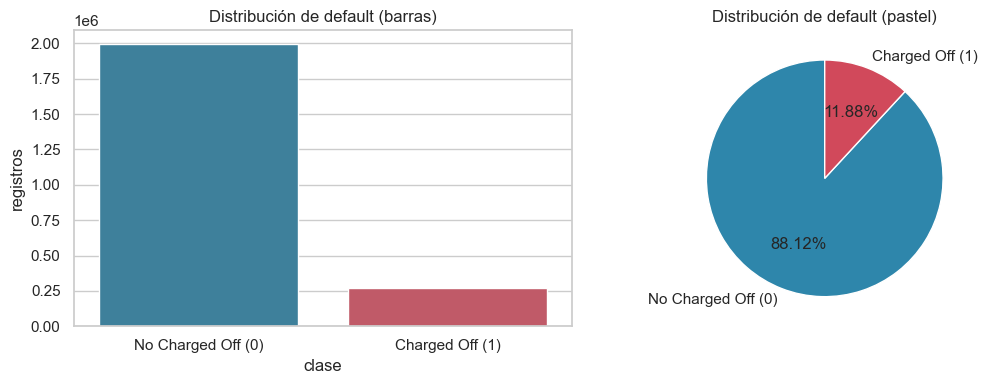
Clase minoritaria: 11.88%
Comentario: desbalance relevante. Conviene estratificar la partición train/test, usar métricas ponderadas (precision/recall/F1/ROC-AUC de la clase minoritaria) y considerar class_weight
9.10.4.1.3. Análisis bidimensional (relaciones entre variables)#
Relación de cada variable numérica con default#
Se usa t de Student cuando la variable es aproximadamente normal (según el criterio de asimetría de la sección anterior) y Mann-Whitney U en caso contrario. Además se calcula la correlación punto-biserial.
bivar_num_rows = []
for col in numeric_cols:
s = pd.to_numeric(df[col], errors="coerce")
temp = pd.DataFrame({col: s, "default": df["default"]}).dropna()
if temp.shape[0] < 10 or temp["default"].nunique() < 2:
continue
g0, g1 = temp.loc[temp["default"] == 0, col], temp.loc[temp["default"] == 1, col]
if len(g0) < 3 or len(g1) < 3:
continue
normal = bool(numeric_summary.loc[col, "normalidad"].startswith("Aproximadamente")) if col in numeric_summary.index else False
if normal:
stat, p = stats.ttest_ind(g0, g1, equal_var=False)
prueba = "t de Student (Welch)"
else:
stat, p = stats.mannwhitneyu(g0, g1, alternative="two-sided")
prueba = "Mann-Whitney U"
pb_r, pb_p = stats.pointbiserialr(temp["default"], temp[col])
bivar_num_rows.append({
"variable": col, "media_default_0": g0.mean(), "media_default_1": g1.mean(),
"diferencia_medias": g1.mean() - g0.mean(), "prueba": prueba, "estadistico": stat, "p_value": p,
"significativo (p<0.05)": p < 0.05, "point_biserial_r": pb_r, "point_biserial_p": pb_p,
})
bivar_numeric = pd.DataFrame(bivar_num_rows).sort_values("point_biserial_r", key=abs, ascending=False)
display(bivar_numeric)
| variable | media_default_0 | media_default_1 | diferencia_medias | prueba | estadistico | p_value | significativo (p<0.05) | point_biserial_r | point_biserial_p | |
|---|---|---|---|---|---|---|---|---|---|---|
| 28 | last_fico_range_high | 703.732908 | 568.443236 | -135.289672 | t de Student (Welch) | 1.202776e+03 | 0.000000e+00 | True | -0.599870 | 0.000000 |
| 29 | last_fico_range_low | 698.245741 | 507.111752 | -191.133989 | Mann-Whitney U | 5.048243e+11 | 0.000000e+00 | True | -0.556638 | 0.000000 |
| 25 | recoveries | 0.227103 | 1209.456926 | 1209.229823 | Mann-Whitney U | 8.359816e+10 | 0.000000e+00 | True | 0.522940 | 0.000000 |
| 26 | collection_recovery_fee | 0.047654 | 201.526243 | 201.478589 | Mann-Whitney U | 9.169414e+10 | 0.000000e+00 | True | 0.496764 | 0.000000 |
| 22 | total_rec_prncp | 10195.722044 | 4387.877516 | -5807.844528 | Mann-Whitney U | 3.899104e+11 | 0.000000e+00 | True | -0.225806 | 0.000000 |
| ... | ... | ... | ... | ... | ... | ... | ... | ... | ... | ... |
| 43 | total_bal_il | 35491.797686 | 35664.202984 | 172.405298 | Mann-Whitney U | 7.453327e+10 | 1.079182e-50 | True | 0.001097 | 0.195238 |
| 36 | tot_coll_amt | 231.816813 | 239.577186 | 7.760373 | Mann-Whitney U | 2.450970e+11 | 3.358018e-119 | True | 0.000294 | 0.663705 |
| 32 | policy_code | 1.000000 | 1.000000 | 0.000000 | t de Student (Welch) | NaN | NaN | False | NaN | NaN |
| 102 | deferral_term | 3.000000 | 3.000000 | 0.000000 | t de Student (Welch) | NaN | NaN | False | NaN | NaN |
| 104 | hardship_length | 3.000000 | 3.000000 | 0.000000 | t de Student (Welch) | NaN | NaN | False | NaN | NaN |
113 rows × 10 columns
Relación de cada variable categórica con default#
Crosstab con tasa de default por categoría, gráfico de barras apiladas y chi-cuadrado.
# Relación de cada variable CATEGÓRICA con el target 'default': tabla de contingencia + chi-cuadrado
# de independencia, y la tasa de default por categoría (para ver cuáles concentran más riesgo).
crosstabs_categoricas = {}
bivar_cat_rows = []
for col in categorical_cols:
tmp = df[[col, "default"]].copy()
tmp[col] = tmp[col].fillna("Missing").astype(str) # los nulos se tratan como una categoría más aquí
# Tabla de contingencia: filas = categorías, columnas = 0/1 de default, valores = conteos.
ct = pd.crosstab(tmp[col], tmp["default"]).reindex(columns=[0, 1], fill_value=0)
if ct.shape[0] < 2:
continue # una sola categoría: no tiene sentido probar independencia
chi2, p, dof, _ = stats.chi2_contingency(ct) # prueba de independencia chi-cuadrado
# Igual que ct, pero normalizado por fila: da directamente la TASA de default dentro de cada categoría.
rate = pd.crosstab(tmp[col], tmp["default"], normalize="index").reindex(columns=[0, 1], fill_value=0.0)
rate = rate.sort_values(1, ascending=False) # de mayor a menor tasa de default (columna 1)
crosstabs_categoricas[col] = rate # se guarda para reutilizarla en el gráfico de la siguiente celda
bivar_cat_rows.append({
"variable": col, "n_categorias": ct.shape[0], "chi2": chi2, "dof": dof, "p_value": p,
"significativo (p<0.05)": p < 0.05,
"categoria_mayor_riesgo": rate.index[0], "tasa_default_max": rate.iloc[0, 1],
})
bivar_categorical = pd.DataFrame(bivar_cat_rows).sort_values("p_value") # las más significativas primero
display(bivar_categorical)
| variable | n_categorias | chi2 | dof | p_value | significativo (p<0.05) | categoria_mayor_riesgo | tasa_default_max | |
|---|---|---|---|---|---|---|---|---|
| 0 | term | 3 | 1.614063e+04 | 2 | 0.000000e+00 | True | 60 months | 0.161783 |
| 19 | last_credit_pull_d | 142 | 4.354728e+05 | 141 | 0.000000e+00 | True | Oct-2016 | 0.760901 |
| 20 | application_type | 3 | 5.349470e+03 | 2 | 0.000000e+00 | True | Individual | 0.122533 |
| 21 | verification_status_joint | 4 | 4.821194e+03 | 3 | 0.000000e+00 | True | Missing | 0.122259 |
| 22 | sec_app_earliest_cr_line | 664 | 6.538202e+03 | 663 | 0.000000e+00 | True | Dec-1965 | 1.000000 |
| ... | ... | ... | ... | ... | ... | ... | ... | ... |
| 14 | addr_state | 52 | 3.230562e+03 | 51 | 0.000000e+00 | True | AL | 0.143894 |
| 16 | initial_list_status | 3 | 1.114536e+04 | 2 | 0.000000e+00 | True | f | 0.151846 |
| 23 | hardship_flag | 3 | 1.166546e+02 | 2 | 4.664268e-26 | True | N | 0.118840 |
| 8 | pymnt_plan | 3 | 8.805582e+01 | 2 | 7.566965e-20 | True | n | 0.118829 |
| 9 | url | 2260669 | 2.260701e+06 | 2260668 | 4.936838e-01 | False | https://lendingclub.com/browse/loanDetail.acti... | 1.000000 |
36 rows × 8 columns
Multicolinealidad entre variables independientes#
Pearson entre todas las numéricas y V de Cramér entre las categóricas (se excluyen las de cardinalidad extrema, poco útiles y muy costosas de calcular). Se listan los pares por encima del umbral 0.70.
def cramers_v(x, y):
"""V de Cramér: mide la fuerza de asociación entre dos variables categóricas (0 = nada asociadas,
1 = asociación perfecta); es el equivalente categórico de una correlación. Usa la corrección de sesgo
de Bergsma (denominador ajustado por r y k) en vez de la fórmula simple, más fiable con muchas categorías."""
tabla = pd.crosstab(x, y)
if tabla.empty:
return np.nan
chi2 = stats.chi2_contingency(tabla, correction=False)[0]
n = tabla.to_numpy().sum()
if n <= 1:
return np.nan
r, k = tabla.shape
phi2 = chi2 / n
phi2corr = max(0, phi2 - ((k - 1) * (r - 1)) / (n - 1))
rcorr = r - ((r - 1) ** 2) / (n - 1)
kcorr = k - ((k - 1) ** 2) / (n - 1)
denom = min(kcorr - 1, rcorr - 1)
return np.sqrt(phi2corr / denom) if denom > 0 else np.nan
def pares_por_umbral(matrix, umbral, nombre_metrica):
"""De una matriz cuadrada de asociación (Pearson o Cramér), extrae solo los pares de variables
(fuera de la diagonal, sin repetir i-j y j-i) cuyo valor absoluto supera el umbral dado."""
filas = []
cols = matrix.columns
for i in range(len(cols)):
for j in range(i + 1, len(cols)):
v = matrix.iloc[i, j]
if pd.notna(v) and abs(v) > umbral:
filas.append({"variable_1": cols[i], "variable_2": cols[j], nombre_metrica: v})
return pd.DataFrame(filas).sort_values(nombre_metrica, key=abs, ascending=False) if filas else pd.DataFrame(columns=["variable_1", "variable_2", nombre_metrica])
CORR_THRESHOLD = 0.70
corr_matrix_full = df[numeric_cols].corr(method="pearson")
pares_alta_corr_df = pares_por_umbral(corr_matrix_full, CORR_THRESHOLD, "r")
print(f"Pares numéricos con |r| > {CORR_THRESHOLD}: {len(pares_alta_corr_df)}")
display(pares_alta_corr_df)
Pares numéricos con |r| > 0.7: 76
| variable_1 | variable_2 | r | |
|---|---|---|---|
| 70 | hardship_amount | orig_projected_additional_accrued_interest | 1.000000 |
| 68 | sec_app_fico_range_low | sec_app_fico_range_high | 1.000000 |
| 21 | fico_range_low | fico_range_high | 1.000000 |
| 33 | out_prncp | out_prncp_inv | 0.999999 |
| 0 | loan_amnt | funded_amnt | 0.999755 |
| ... | ... | ... | ... |
| 10 | funded_amnt | orig_projected_additional_accrued_interest | 0.713146 |
| 4 | loan_amnt | orig_projected_additional_accrued_interest | 0.713146 |
| 15 | funded_amnt_inv | orig_projected_additional_accrued_interest | 0.713096 |
| 22 | mths_since_last_delinq | mths_since_last_major_derog | 0.706662 |
| 54 | mort_acc | sec_app_mort_acc | 0.704433 |
76 rows × 3 columns
# Igual que la celda anterior, pero para categóricas usando V de Cramér en vez de Pearson.
# Se excluyen las de cardinalidad muy alta (más de 50 categorías distintas) porque calcular V de Cramér
# para todos los pares sería muy lento y, además, esas variables suelen ser identificadores de bajo valor.
MAX_CATEGORIAS_CRAMER = 50
categorical_cols_cramer = [c for c in categorical_cols if df[c].nunique(dropna=True) <= MAX_CATEGORIAS_CRAMER]
excluidas = [c for c in categorical_cols if c not in categorical_cols_cramer]
print(f"Categóricas incluidas en V de Cramér: {len(categorical_cols_cramer)} de {len(categorical_cols)}")
print(f"Excluidas por cardinalidad > {MAX_CATEGORIAS_CRAMER}: {excluidas}")
# Matriz cuadrada inicializada con 1 en la diagonal (una variable siempre está "perfectamente asociada"
# consigo misma) y se va llenando par por par.
cramer_full = pd.DataFrame(np.eye(len(categorical_cols_cramer)),
index=categorical_cols_cramer, columns=categorical_cols_cramer)
for c1, c2 in itertools.combinations(categorical_cols_cramer, 2): # todos los pares únicos, sin repetir
try:
v = cramers_v(df[c1].fillna("Missing").astype(str), df[c2].fillna("Missing").astype(str))
except (ValueError, MemoryError) as exc:
print(f"No se pudo calcular V de Cramér para {c1} - {c2}: {exc}")
v = np.nan
cramer_full.loc[c1, c2] = cramer_full.loc[c2, c1] = v # matriz simétrica: se llenan ambos lados a la vez
pares_alta_asociacion_cat_df = pares_por_umbral(cramer_full.astype(float), CORR_THRESHOLD, "cramers_v")
print(f"Pares categóricos con V de Cramér > {CORR_THRESHOLD}: {len(pares_alta_asociacion_cat_df)}")
display(pares_alta_asociacion_cat_df)
Categóricas incluidas en V de Cramér: 22 de 36
Excluidas por cardinalidad > 50: ['emp_title', 'issue_d', 'url', 'desc', 'title', 'zip_code', 'addr_state', 'earliest_cr_line', 'last_pymnt_d', 'next_pymnt_d', 'last_credit_pull_d', 'sec_app_earliest_cr_line', 'debt_settlement_flag_date', 'settlement_date']
Pares categóricos con V de Cramér > 0.7: 70
| variable_1 | variable_2 | cramers_v | |
|---|---|---|---|
| 58 | hardship_type | hardship_status | 1.000000 |
| 62 | hardship_type | hardship_loan_status | 0.999999 |
| 57 | hardship_type | hardship_reason | 0.999998 |
| 61 | hardship_type | payment_plan_start_date | 0.999994 |
| 59 | hardship_type | hardship_start_date | 0.999994 |
| ... | ... | ... | ... |
| 30 | verification_status | pymnt_plan | 0.707107 |
| 54 | hardship_flag | hardship_status | 0.707106 |
| 69 | debt_settlement_flag | settlement_status | 0.707106 |
| 27 | home_ownership | hardship_flag | 0.707106 |
| 24 | home_ownership | pymnt_plan | 0.707106 |
70 rows × 3 columns
9.10.4.1.4. Valores faltantes (análisis detallado)#
Cantidad y porcentaje de nulos por columna, visualización del patrón (missingno o, si no está disponible, un
heatmap propio de correlación entre indicadores de nulo), un diagnóstico de asociación entre el indicador de
missingness y la variable objetivo y un plan de tratamiento por variable.
El diagnóstico compara la tasa de
defaultentre filas con y sin dato faltante (con una prueba chi-cuadrado 2×2 como apoyo). No es una prueba formal de MCAR (como la prueba de Little): solo indica si el hecho de faltar es informativo respecto adefault.
# 9.10.4.1.4 — Valores faltantes: cantidad y porcentaje de nulos por columna, para TODAS las columnas
# del dataset (no solo numéricas/categóricas separadas), ordenado de la más incompleta a la más completa.
missing_summary = pd.DataFrame({
"variable": df.columns,
"n_missing": df.isna().sum().values,
"pct_missing": (100 * df.isna().mean()).values,
}).sort_values("pct_missing", ascending=False).reset_index(drop=True)
display(missing_summary)
| variable | n_missing | pct_missing | |
|---|---|---|---|
| 0 | orig_projected_additional_accrued_interest | 2252050 | 99.617331 |
| 1 | hardship_status | 2249784 | 99.517097 |
| 2 | hardship_type | 2249784 | 99.517097 |
| 3 | hardship_reason | 2249784 | 99.517097 |
| 4 | deferral_term | 2249784 | 99.517097 |
| ... | ... | ... | ... |
| 148 | total_pymnt | 33 | 0.001460 |
| 149 | hardship_flag | 33 | 0.001460 |
| 150 | member_id | 0 | 0.000000 |
| 151 | default | 0 | 0.000000 |
| 152 | id | 0 | 0.000000 |
153 rows × 3 columns
cols_con_nulos = missing_summary.loc[(missing_summary["n_missing"] > 0) & (missing_summary["pct_missing"] < 100),
"variable"].tolist()
MAX_COLS_VIZ = 40 # limitar columnas en los gráficos de nulos para que sigan siendo legibles
cols_viz = cols_con_nulos[:MAX_COLS_VIZ]
# Diagnóstico de asociación entre indicador de missingness y la variable objetivo.
# NO es una prueba formal de MCAR: compara la tasa de default con y sin faltante en cada variable,
# con una chi-cuadrado 2x2 (indicador_faltante x default) como apoyo descriptivo.
UMBRAL_DIF_MISSING = 0.02
y = df["default"].to_numpy()
filas_missing = []
for col in cols_con_nulos:
m = df[col].isna().to_numpy() # m = True donde esa columna tiene un valor faltante
tasa_falta = y[m].mean() if m.any() else np.nan # tasa de default ENTRE las filas donde falta col
tasa_presente = y[~m].mean() if (~m).any() else np.nan # tasa de default entre las filas donde NO falta
# Tabla 2x2: (falta / no falta) x (default=1 / default=0), insumo del chi-cuadrado.
tabla_2x2 = np.array([[np.sum(m & (y == 1)), np.sum(m & (y == 0))],
[np.sum(~m & (y == 1)), np.sum(~m & (y == 0))]])
try:
chi2_m, p_m = stats.chi2_contingency(tabla_2x2)[:2]
except ValueError: # ocurre si alguna fila/columna de la tabla queda en cero
chi2_m, p_m = np.nan, np.nan
filas_missing.append({
"variable": col, "pct_missing": 100 * m.mean(),
"tasa_default_si_falta": tasa_falta, "tasa_default_si_presente": tasa_presente,
"diferencia": (tasa_falta - tasa_presente) if pd.notna(tasa_falta) and pd.notna(tasa_presente) else np.nan,
"chi2": chi2_m, "p_value": p_m,
})
missing_assoc = pd.DataFrame(filas_missing).sort_values("diferencia", key=lambda s: s.abs(), ascending=False)
# Se marca como "relevante" solo si la diferencia es grande (>= 2 puntos porcentuales) Y estadísticamente
# significativa (p < 0.05): evita señalar diferencias diminutas que son significativas solo por el
# enorme tamaño de la muestra.
missing_assoc["asociacion_relevante"] = (missing_assoc["diferencia"].abs() >= UMBRAL_DIF_MISSING) & (missing_assoc["p_value"] < 0.05)
print("Diagnóstico de asociación entre indicador de missingness y default "
f"(se marca 'asociacion_relevante' si |diferencia| >= {UMBRAL_DIF_MISSING} y p < 0.05).")
print("Nota: esto no prueba ni descarta formalmente MCAR/MAR/MNAR; solo indica si el faltante es informativo sobre default.")
display(missing_assoc)
Diagnóstico de asociación entre indicador de missingness y default (se marca 'asociacion_relevante' si |diferencia| >= 0.02 y p < 0.05).
Nota: esto no prueba ni descarta formalmente MCAR/MAR/MNAR; solo indica si el faltante es informativo sobre default.
| variable | pct_missing | tasa_default_si_falta | tasa_default_si_presente | diferencia | chi2 | p_value | asociacion_relevante | |
|---|---|---|---|---|---|---|---|---|
| 19 | settlement_term | 98.485160 | 0.105678 | 0.971530 | -0.865851 | 241534.161883 | 0.000000e+00 | True |
| 18 | settlement_amount | 98.485160 | 0.105678 | 0.971530 | -0.865851 | 241534.161883 | 0.000000e+00 | True |
| 17 | settlement_date | 98.485160 | 0.105678 | 0.971530 | -0.865851 | 241534.161883 | 0.000000e+00 | True |
| 16 | settlement_status | 98.485160 | 0.105678 | 0.971530 | -0.865851 | 241534.161883 | 0.000000e+00 | True |
| 15 | debt_settlement_flag_date | 98.485160 | 0.105678 | 0.971530 | -0.865851 | 241534.161883 | 0.000000e+00 | True |
| ... | ... | ... | ... | ... | ... | ... | ... | ... |
| 63 | bc_util | 3.366389 | 0.131360 | 0.118357 | 0.013003 | 118.655147 | 1.246157e-27 | False |
| 65 | bc_open_to_buy | 3.316140 | 0.131123 | 0.118372 | 0.012751 | 112.451820 | 2.844950e-26 | False |
| 66 | mths_since_recent_bc | 3.248771 | 0.131091 | 0.118382 | 0.012710 | 109.529184 | 1.242615e-25 | False |
| 42 | mths_since_last_delinq | 51.246715 | 0.112851 | 0.125042 | -0.012191 | 801.755556 | 2.240640e-176 | False |
| 40 | mths_since_recent_revol_delinq | 67.250910 | 0.115445 | 0.125673 | -0.010228 | 497.439969 | 3.427553e-110 | False |
150 rows × 8 columns
def plan_tratamiento(pct, tipo):
"""Traduce el % de faltantes (y el tipo de variable) en una recomendación de tratamiento concreta."""
if pct == 0:
return "sin acción"
if pct > 70:
return "eliminar columna (> 70% nulos)"
if pct > 30:
return "evaluar imputación avanzada (30%-70%) o crear indicador de faltante"
if tipo == "numérica":
return "imputar con mediana"
return "imputar con moda o categoría 'Missing'"
tipo_por_col = {c: "numérica" for c in numeric_cols}
tipo_por_col.update({c: "categórica" for c in categorical_cols})
missing_summary["tipo"] = missing_summary["variable"].map(tipo_por_col).fillna("otra")
missing_summary["plan_tratamiento"] = [plan_tratamiento(p, t) for p, t in
zip(missing_summary["pct_missing"], missing_summary["tipo"])]
display(missing_summary[missing_summary["n_missing"] > 0]) # solo se muestran las columnas que sí tienen algún nulo
| variable | n_missing | pct_missing | tipo | plan_tratamiento | |
|---|---|---|---|---|---|
| 0 | orig_projected_additional_accrued_interest | 2252050 | 99.617331 | numérica | eliminar columna (> 70% nulos) |
| 1 | hardship_status | 2249784 | 99.517097 | categórica | eliminar columna (> 70% nulos) |
| 2 | hardship_type | 2249784 | 99.517097 | categórica | eliminar columna (> 70% nulos) |
| 3 | hardship_reason | 2249784 | 99.517097 | categórica | eliminar columna (> 70% nulos) |
| 4 | deferral_term | 2249784 | 99.517097 | numérica | eliminar columna (> 70% nulos) |
| ... | ... | ... | ... | ... | ... |
| 145 | fico_range_high | 33 | 0.001460 | numérica | imputar con mediana |
| 146 | fico_range_low | 33 | 0.001460 | numérica | imputar con mediana |
| 147 | total_rec_int | 33 | 0.001460 | numérica | imputar con mediana |
| 148 | total_pymnt | 33 | 0.001460 | numérica | imputar con mediana |
| 149 | hardship_flag | 33 | 0.001460 | categórica | imputar con moda o categoría 'Missing' |
150 rows × 5 columns
9.10.4.1.5. Resumen ejecutivo del EDA#
Identificación de variables de posible data leakage (información posterior a la originación)#
Si tienes el diccionario de datos oficial de Lending Club (LCDataDictionary.xlsx), indica su ruta en
DATA_DICT_PATH y se usará su columna Description para detectar leakage. Si no lo tienes o no se puede leer,
se usa automáticamente un respaldo por patrón de nombre de columna (campos de pago, recuperación, hardship y
liquidación posteriores al desembolso), documentado según el diccionario público de Lending Club.
# 9.10.4.1.5 (parte 1) — Detección de variables con posible "data leakage": columnas que contienen
# información que solo se conoce DESPUÉS de que el préstamo ya incumplió o se resolvió (por ejemplo,
# cuánto se recuperó tras el default), y que por lo tanto no deberían usarse para predecirlo.
DATA_DICT_PATH = "https://raw.githubusercontent.com/juandpolo22/Diccionario_tarea1/main/LCDataDictionary.xlsx"
# Palabras clave que, en la DESCRIPCIÓN oficial de una columna, sugieren que es posterior al desenlace del préstamo.
PALABRAS_LEAKAGE = [
"post charge off", "recovery", "recoveries", "received to date", "to date",
"settlement", "last month", "next scheduled", "most recent", "remaining outstanding",
"hardship", "hardship plan", "charged off",
"last fico", "last total payment", # <- agregadas: cubren last_fico_range_* y last_pymnt_amnt
]
# Respaldo cuando no se tiene el diccionario de datos: patrón sobre el NOMBRE de la columna que capta
# los mismos casos típicos (pagos totales, recuperaciones, fechas de último pago, planes de hardship, etc.).
PATRON_NOMBRE_LEAKAGE = (
r"^(out_prncp|total_pymnt|total_rec_|recoveries|collection_recovery_fee|last_pymnt|next_pymnt|"
r"last_credit_pull|last_fico|debt_settlement|settlement_|hardship_|pymnt_plan)"
)
FALSOS_POSITIVOS = [ # variables que el patrón podría marcar mal (son "meses desde", no posteriores al target)
"mo_sin_rcnt_rev_tl_op", "mo_sin_rcnt_tl", "mths_since_last_major_derog", "mths_since_rcnt_il",
"mths_since_recent_bc", "mths_since_recent_bc_dlq", "mths_since_recent_inq",
"mths_since_recent_revol_delinq", "sec_app_mths_since_last_major_derog",
]
columnas_leakage = []
if DATA_DICT_PATH:
# Camino preferido: si se tiene el diccionario oficial de Lending Club, se busca la palabra clave
# dentro de la descripción real de cada columna (más confiable que adivinar por el nombre).
try:
dicc = pd.read_excel(DATA_DICT_PATH, sheet_name="LoanStats").dropna(subset=["LoanStatNew"])
dicc["LoanStatNew"] = dicc["LoanStatNew"].str.strip()
dicc["posible_leakage"] = dicc["Description"].apply(
lambda d: any(p in str(d).lower() for p in PALABRAS_LEAKAGE) if pd.notna(d) else False)
columnas_leakage = dicc.loc[dicc["posible_leakage"], "LoanStatNew"].tolist()
print(f"Leakage detectado vía diccionario oficial: {len(columnas_leakage)} columnas.")
except Exception as exc:
print(f"[aviso] No se pudo leer el diccionario ({exc}); se usa el respaldo por patrón de nombre.")
if not columnas_leakage:
# Camino de respaldo: sin diccionario, se aplica el patrón de nombre directamente sobre df.columns.
import re
columnas_leakage = [c for c in df.columns if re.match(PATRON_NOMBRE_LEAKAGE, c)]
print(f"Leakage detectado vía patrón de nombre (respaldo): {len(columnas_leakage)} columnas.")
# Se descartan de la lista final las que ya se sabe que son falsos positivos del patrón de nombre.
columnas_leakage = [c for c in set(columnas_leakage) if c not in FALSOS_POSITIVOS]
display(pd.DataFrame({"variable": columnas_leakage}))
Leakage detectado vía diccionario oficial: 45 columnas.
| variable | |
|---|---|
| 0 | hardship_length |
| 1 | settlement_term |
| 2 | recoveries |
| 3 | debt_settlement_flag |
| 4 | last_fico_range_high |
| ... | ... |
| 31 | total_pymnt_inv |
| 32 | hardship_flag |
| 33 | hardship_reason |
| 34 | hardship_type |
| 35 | hardship_loan_status |
36 rows × 1 columns
MAX_CATEGORIAS_CANDIDATA = 50
categoricas_alta_cardinalidad = [c for c in categorical_cols if df[c].nunique(dropna=True) > MAX_CATEGORIAS_CANDIDATA]
print(f"Categóricas excluidas por cardinalidad > {MAX_CATEGORIAS_CANDIDATA}: {categoricas_alta_cardinalidad}")
Categóricas excluidas por cardinalidad > 50: ['emp_title', 'issue_d', 'url', 'desc', 'title', 'zip_code', 'addr_state', 'earliest_cr_line', 'last_pymnt_d', 'next_pymnt_d', 'last_credit_pull_d', 'sec_app_earliest_cr_line', 'debt_settlement_flag_date', 'settlement_date']
Variables más prometedoras para predecir default#
Ranking combinado (numéricas por |correlación punto-biserial|, categóricas por V de Cramér), excluyendo
identificadores, loan_status y las columnas de leakage detectadas arriba, y sin quedarse con dos variables
redundantes entre sí (|Pearson| o V de Cramér > 0.70).
# 9.10.4.1.5 (parte 2) — Selección de las variables más prometedoras para predecir 'default':
# se combinan numéricas (por |correlación punto-biserial|) y categóricas (por V de Cramér) en un solo
# ranking, excluyendo leakage y evitando quedarse con dos variables muy redundantes entre sí.
N_TOP = 10
UMBRAL_REDUNDANCIA = 0.70
MAX_PCT_FALTANTES_CANDIDATA = 70
variables_alto_faltante = missing_summary.loc[
missing_summary["pct_missing"] > MAX_PCT_FALTANTES_CANDIDATA, "variable"
].tolist()
print(f"Excluidas por >{MAX_PCT_FALTANTES_CANDIDATA}% de faltantes: {variables_alto_faltante}")
excluir = (set(["id", "member_id", "loan_status", "default"])
| set(columnas_leakage)
| set(categoricas_alta_cardinalidad)
| set(variables_alto_faltante))
def cramers_v_vs_default(col):
return cramers_v(df[col].fillna("Missing").astype(str), df["default"])
# Ranking de numéricas: fuerza = |correlación punto-biserial| con default (ya calculada en bivar_numeric).
rank_num = bivar_numeric[~bivar_numeric["variable"].isin(excluir)][["variable", "point_biserial_r", "p_value"]].copy()
rank_num["fuerza"] = rank_num["point_biserial_r"].abs()
rank_num["tipo"] = "numérica"
# Ranking de categóricas: fuerza = V de Cramér con default (se calcula aquí mismo, variable por variable).
rank_cat = bivar_categorical[~bivar_categorical["variable"].isin(excluir)][["variable", "p_value"]].copy()
rank_cat["fuerza"] = rank_cat["variable"].apply(cramers_v_vs_default)
rank_cat["tipo"] = "categórica"
# Se juntan ambos rankings en uno solo, se descartan las no significativas (p >= 0.05) y se ordena
# de mayor a menor fuerza de asociación con el target.
ranking = pd.concat([rank_num[["variable", "tipo", "fuerza", "p_value"]],
rank_cat[["variable", "tipo", "fuerza", "p_value"]]], ignore_index=True)
ranking = ranking[ranking["p_value"] < 0.05].sort_values("fuerza", ascending=False).reset_index(drop=True)
def es_redundante(candidata, tipo, elegidas):
"""Compara 'candidata' contra cada variable ya elegida del MISMO tipo: si están muy correlacionadas
(Pearson para numéricas, Cramér para categóricas) por encima del umbral, se considera redundante
y no aporta información nueva al conjunto ya seleccionado."""
for var, t in elegidas:
if tipo == "numérica" and t == "numérica" and candidata in corr_matrix_full.columns and var in corr_matrix_full.columns:
r = corr_matrix_full.loc[candidata, var]
if pd.notna(r) and abs(r) > UMBRAL_REDUNDANCIA:
return True, f"|Pearson r|={abs(r):.2f} con '{var}'"
if tipo == "categórica" and t == "categórica" and candidata in cramer_full.columns and var in cramer_full.columns:
v = cramer_full.loc[candidata, var]
if pd.notna(v) and v > UMBRAL_REDUNDANCIA:
return True, f"V de Cramér={v:.2f} con '{var}'"
return False, None
# Recorre el ranking de mayor a menor fuerza y va eligiendo variables en orden, saltándose las que
# resulten redundantes con alguna ya elegida, hasta completar N_TOP variables (o agotar el ranking).
elegidas, justificaciones, descartadas = [], [], []
for _, fila in ranking.iterrows():
if len(elegidas) >= N_TOP:
break
redundante, motivo = es_redundante(fila["variable"], fila["tipo"], elegidas)
if redundante:
descartadas.append({"variable": fila["variable"], "tipo": fila["tipo"], "motivo": motivo})
continue
elegidas.append((fila["variable"], fila["tipo"]))
metrica = "|correlación punto-biserial|" if fila["tipo"] == "numérica" else "V de Cramér"
justificaciones.append({"variable": fila["variable"], "tipo": fila["tipo"], "metrica": metrica,
"valor_metrica": fila["fuerza"], "p_value": fila["p_value"]})
seleccion_final = pd.DataFrame(justificaciones)
print("Variables más prometedoras (sin leakage ni redundancia):")
display(seleccion_final)
if descartadas:
print("Descartadas por redundancia con una variable ya elegida:")
display(pd.DataFrame(descartadas))
Excluidas por >70% de faltantes: ['orig_projected_additional_accrued_interest', 'hardship_status', 'hardship_type', 'hardship_reason', 'deferral_term', 'hardship_amount', 'hardship_start_date', 'payment_plan_start_date', 'hardship_length', 'hardship_dpd', 'hardship_loan_status', 'hardship_end_date', 'hardship_payoff_balance_amount', 'hardship_last_payment_amount', 'settlement_percentage', 'debt_settlement_flag_date', 'settlement_status', 'settlement_date', 'settlement_amount', 'settlement_term', 'sec_app_mths_since_last_major_derog', 'sec_app_revol_util', 'revol_bal_joint', 'sec_app_fico_range_high', 'sec_app_fico_range_low', 'sec_app_collections_12_mths_ex_med', 'sec_app_chargeoff_within_12_mths', 'sec_app_num_rev_accts', 'sec_app_open_act_il', 'sec_app_mort_acc', 'sec_app_earliest_cr_line', 'sec_app_inq_last_6mths', 'sec_app_open_acc', 'verification_status_joint', 'dti_joint', 'annual_inc_joint', 'desc', 'mths_since_last_record', 'mths_since_recent_bc_dlq', 'mths_since_last_major_derog']
Variables más prometedoras (sin leakage ni redundancia):
| variable | tipo | metrica | valor_metrica | p_value | |
|---|---|---|---|---|---|
| 0 | sub_grade | categórica | V de Cramér | 0.227241 | 0.0 |
| 1 | int_rate | numérica | |correlación punto-biserial| | 0.198918 | 0.0 |
| 2 | fico_range_low | numérica | |correlación punto-biserial| | 0.119437 | 0.0 |
| 3 | verification_status | categórica | V de Cramér | 0.094978 | 0.0 |
| 4 | acc_open_past_24mths | numérica | |correlación punto-biserial| | 0.093171 | 0.0 |
| 5 | inq_last_6mths | numérica | |correlación punto-biserial| | 0.083363 | 0.0 |
| 6 | bc_open_to_buy | numérica | |correlación punto-biserial| | 0.082013 | 0.0 |
| 7 | percent_bc_gt_75 | numérica | |correlación punto-biserial| | 0.076392 | 0.0 |
| 8 | inq_last_12m | numérica | |correlación punto-biserial| | 0.071265 | 0.0 |
| 9 | all_util | numérica | |correlación punto-biserial| | 0.067825 | 0.0 |
Descartadas por redundancia con una variable ya elegida:
| variable | tipo | motivo | |
|---|---|---|---|
| 0 | grade | categórica | V de Cramér=1.00 con 'sub_grade' |
| 1 | fico_range_high | numérica | |Pearson r|=1.00 con 'fico_range_low' |
| 2 | term | categórica | V de Cramér=0.76 con 'sub_grade' |
| 3 | num_tl_op_past_12m | numérica | |Pearson r|=0.76 con 'acc_open_past_24mths' |
| 4 | open_rv_24m | numérica | |Pearson r|=0.85 con 'acc_open_past_24mths' |
| 5 | total_bc_limit | numérica | |Pearson r|=0.84 con 'bc_open_to_buy' |
| 6 | bc_util | numérica | |Pearson r|=0.85 con 'percent_bc_gt_75' |
| 7 | initial_list_status | categórica | V de Cramér=0.71 con 'sub_grade' |
Justificación de la eliminación de variables#
El dataset original contenia 2.260.701 filas y 151 columnas, un volumen que hace inviable e innecesario utilizar todas las variables tal cual: muchas de ellas no aportan valor predictivo, distorsionan las métricas de asociación y comprometerían la validez del modelo. Por eso, antes de llegar a las 10 variables finales, se aplicó un proceso de reducción en varias etapas. Primero se descartaron id y member_id por ser identificadores únicos sin relación causal con el riesgo de impago, y loan_status por ser la columna origen de la que se deriva literalmente el target. Después se identificaron y excluyeron las variables con data leakage: columnas que solo se conocen o cambian después de que el préstamo ya fue otorgado y está en curso (pagos recibidos, recuperaciones, montos de acuerdos de pago, fechas de últimos pagos, etc.), verificadas contra el diccionario oficial de datos —de incluirse, el modelo aprendería a partir de información que en producción todavía no existiría al momento de decidir el préstamo. También se eliminaron las categóricas de cardinalidad extrema (más de 50 categorías distintas, como emp_title, title, desc o zip_code), porque funcionan casi como texto libre o cuasi-identificadores e inflan artificialmente las métricas de asociación. Del universo restante, solo se conservaron las variables con asociación estadísticamente significativa con default (p < 0.05), y de esas, se filtraron las redundantes entre sí (alta correlación o V de Cramér con una variable ya elegida), para evitar quedarse con dos columnas que en la práctica miden lo mismo.
Las 10 variables de la tabla surgen de un proceso sistemático, no de un criterio arbitrario: primero se excluyeron los identificadores sin valor predictivo (id, member_id), la columna origen del target (loan_status), las variables con posible data leakage información posterior a la originación del préstamo, verificada contra el diccionario oficial de datos, las categóricas de cardinalidad extrema, y las variables con más de 70% de valores faltantes (mismo umbral que la regla de tratamiento de faltantes del EDA). Sobre el resto, se calculó la fuerza de asociación con default de forma comparable entre tipos de variable V de Cramér para categóricas, valor absoluto de la correlación punto-biserial para numéricas, reteniendo solo las asociaciones estadísticamente significativas (p < 0.05). El ranking resultante se recorrió de mayor a menor fuerza, descartando iterativamente cualquier candidata redundante (|Pearson r| o V de Cramér > 0.70) con una variable ya seleccionada, hasta completar las 10. El resultado mezcla variables numéricas y categóricas relacionadas con el perfil crediticio del solicitante (sub_grade, int_rate, fico_range_low, verification_status) y con su actividad crediticia reciente (inq_last_6mths, acc_open_past_24mths, bc_open_to_buy, percent_bc_gt_75, inq_last_12m, all_util). Dos candidatas del co-solicitante en préstamos conjuntos (sec_app_fico_range_low, sec_app_inq_last_6mths) fueron descartadas pese a tener buena asociación estadística, porque superan el 95% de valores faltantes; en su lugar entraron inq_last_12m y all_util, que rondan un 38% de faltantes cada una y faltan prácticamente en las mismas filas (99.97% de solapamiento) — un patrón que resultó ser fuertemente informativo sobre el target: la tasa de default casi se duplica en los solicitantes a quienes falta el dato (17.14% vs 8.61%, +8.5 puntos porcentuales, p<0.001). Por eso, en el preprocesamiento del modelado no basta con imputar la mediana en estas dos variables: se creará además un indicador binario de faltante (inq_last_12m_missing / all_util_missing) para conservar esa señal, en línea con la recomendación de “crear indicador de faltante” que ya contemplaba la tabla de decisión del EDA para el tramo 30%-70%. Cabe señalar que ninguna asociación individual con default es fuerte por sí sola (todas por debajo de 0.23): esto es esperable en un problema de riesgo crediticio, donde el poder predictivo suele residir en la combinación de variables más que en un único factor dominante, y respalda usar estas 10 (más los indicadores de faltante) como conjunto de entrada al modelado en lugar de depender de una sola.
tipo_por_variable = dict(zip(seleccion_final["variable"], seleccion_final["tipo"]))
numeric_cols_top = [v for v in seleccion_final["variable"] if tipo_por_variable[v] == "numérica"]
categorical_cols_top = [v for v in seleccion_final["variable"] if tipo_por_variable[v] == "categórica"]
print(f"Numéricas top ({len(numeric_cols_top)}): {numeric_cols_top}")
print(f"Categóricas top ({len(categorical_cols_top)}): {categorical_cols_top}")
Numéricas top (8): ['int_rate', 'fico_range_low', 'acc_open_past_24mths', 'inq_last_6mths', 'bc_open_to_buy', 'percent_bc_gt_75', 'inq_last_12m', 'all_util']
Categóricas top (2): ['sub_grade', 'verification_status']
cols_con_nulos = missing_summary.loc[
(missing_summary["n_missing"] > 0) &
(missing_summary["pct_missing"] < 100),
"variable"
].tolist()
MAX_COLS_VIZ = 40 # limitar columnas en los gráficos de nulos para que sigan siendo legibles
cols_viz = [
v for v in seleccion_final["variable"]
if v in cols_con_nulos
][:MAX_COLS_VIZ]
if MSNO_OK and cols_viz:
msno.bar(
df[cols_viz],
figsize=(16, 6),
fontsize=8,
color="#2E86AB"
)
plt.title(
f"missingno.bar — completitud de las {len(cols_viz)} columnas con más nulos"
)
plt.tight_layout()
plt.show()
msno.heatmap(
df[cols_viz],
figsize=(14, 12),
fontsize=8
)
plt.title(
"missingno.heatmap — correlación entre patrones de nulos"
)
plt.show()
elif cols_viz:
null_corr = df[cols_viz].isna().astype(int).corr()
plt.figure(
figsize=(
min(18, 0.35 * len(cols_viz) + 4),
min(15, 0.35 * len(cols_viz) + 3)
)
)
sns.heatmap(
null_corr,
cmap="coolwarm",
vmin=-1,
vmax=1,
center=0
)
plt.title(
"Correlación entre indicadores de nulo (respaldo sin missingno)"
)
plt.tight_layout()
plt.show()
else:
print("No hay columnas con nulos parciales para visualizar.")
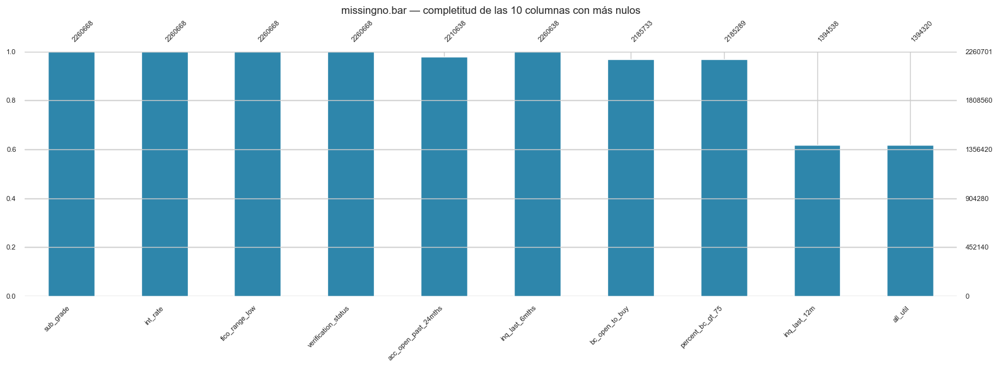
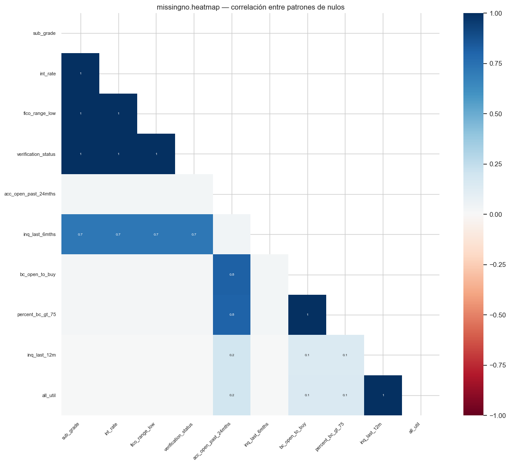
El análisis de completitud evidencia que la mayoría de las variables presentan una alta disponibilidad de información, con proporciones de datos observados cercanas al 100 %. Sin embargo, las variables sec_app_fico_range_low y sec_app_no_late_… presentan una completitud cercana al 5 %, lo que indica una ausencia de información en aproximadamente el 95 % de las observaciones. Por tanto, estas variables requieren un análisis particular antes de definir su tratamiento, dado que su elevada proporción de valores faltantes podría limitar su utilidad para el modelamiento.
Variable num#
# Un histograma + un boxplot por cada variable numérica: el histograma muestra la forma de la
# distribución (sesgo, modas) y el boxplot resalta la mediana, el IQR y los outliers de un vistazo.
for col in numeric_cols_top:
valid = pd.to_numeric(df[col], errors="coerce").dropna()
if valid.empty: # nada que graficar si la columna no tiene datos numéricos válidos
continue
fig, axes = plt.subplots(1, 2, figsize=(11, 3.6))
axes[0].hist(valid, bins=50, color="#2E86AB", edgecolor="white")
axes[0].set_title(f"Histograma: {col}")
sns.boxplot(x=valid, ax=axes[1], color="#9FD3E8")
axes[1].set_title(f"Boxplot: {col}")
plt.tight_layout()
plt.show()
fila = numeric_summary.loc[col]
print(f"Q1={fila['q25']:.2f} | mediana={fila['median']:.2f} | Q3={fila['q75']:.2f} | IQR={fila['IQR']:.2f}")
print(f"Outliers (regla IQR): {int(fila['outliers_IQR_n']):,} de {int(fila['count']):,} "
f"({fila['outliers_IQR_pct']:.2f}%)")
print(f"Asimetría: {fila['skewness']:.2f} — {fila['normalidad']}")
print(f"Faltantes: {int(fila['missing_n']):,} ({fila['missing_pct']:.2f}%) — {fila['decision_faltantes']}")
print()
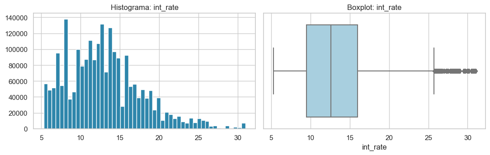
Q1=9.49 | mediana=12.62 | Q3=15.99 | IQR=6.50
Outliers (regla IQR): 41,099 de 2,260,668 (1.82%)
Asimetría: 0.77 — Aproximadamente normal (|skew|<=1)
Faltantes: 33 (0.00%) — Imputación simple (mediana)
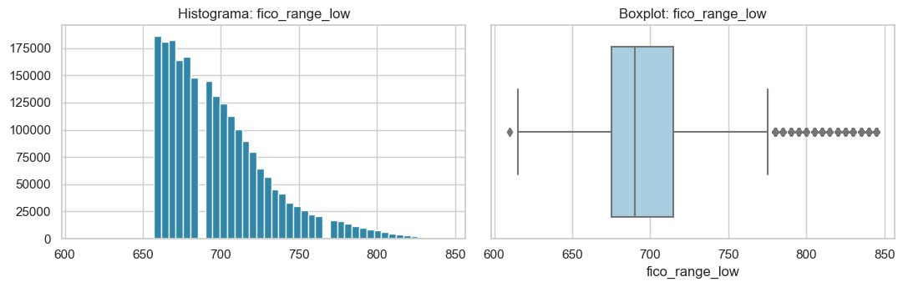
Q1=675.00 | mediana=690.00 | Q3=715.00 | IQR=40.00
Outliers (regla IQR): 74,846 de 2,260,668 (3.31%)
Asimetría: 1.19 — No normal / asimétrica -> considerar log o Box-Cox
Faltantes: 33 (0.00%) — Imputación simple (mediana)
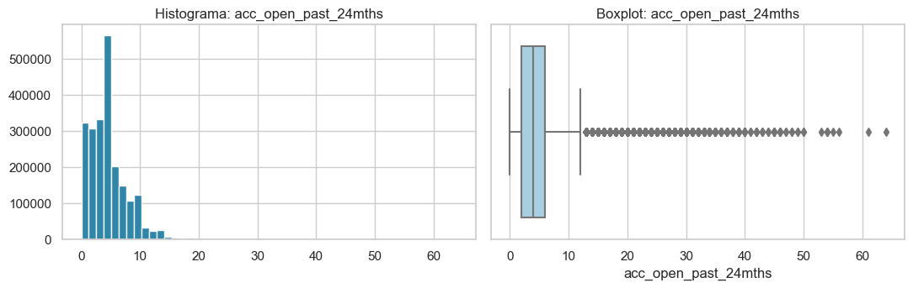
Q1=2.00 | mediana=4.00 | Q3=6.00 | IQR=4.00
Outliers (regla IQR): 48,076 de 2,210,638 (2.17%)
Asimetría: 1.40 — No normal / asimétrica -> considerar log o Box-Cox
Faltantes: 50,063 (2.21%) — Imputación simple (mediana)
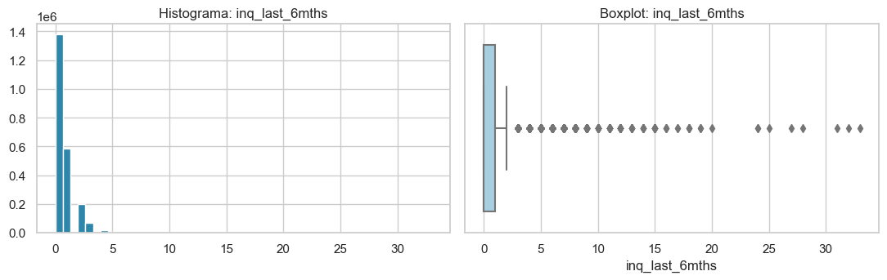
Q1=0.00 | mediana=0.00 | Q3=1.00 | IQR=1.00
Outliers (regla IQR): 94,314 de 2,260,638 (4.17%)
Asimetría: 2.07 — No normal / asimétrica -> considerar log o Box-Cox
Faltantes: 63 (0.00%) — Imputación simple (mediana)
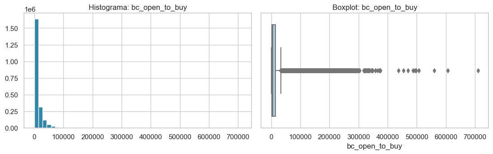
Q1=1722.00 | mediana=5442.00 | Q3=14187.00 | IQR=12465.00
Outliers (regla IQR): 180,429 de 2,185,733 (8.25%)
Asimetría: 3.74 — No normal / asimétrica -> considerar log o Box-Cox
Faltantes: 74,968 (3.32%) — Imputación simple (mediana)
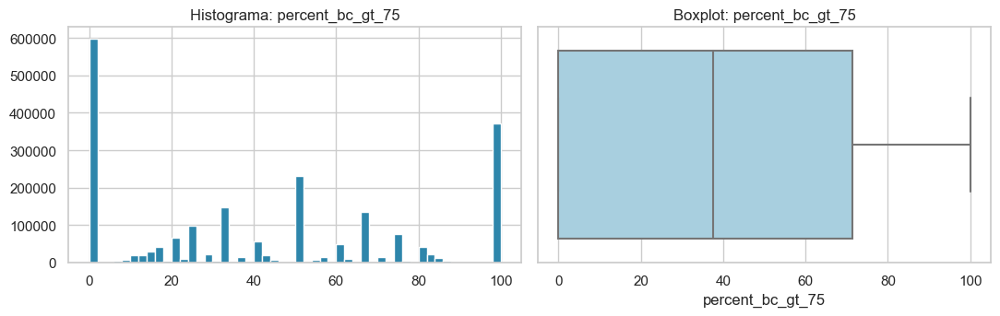
Q1=0.00 | mediana=37.50 | Q3=71.40 | IQR=71.40
Outliers (regla IQR): 0 de 2,185,289 (0.00%)
Asimetría: 0.31 — Aproximadamente normal (|skew|<=1)
Faltantes: 75,412 (3.34%) — Imputación simple (mediana)
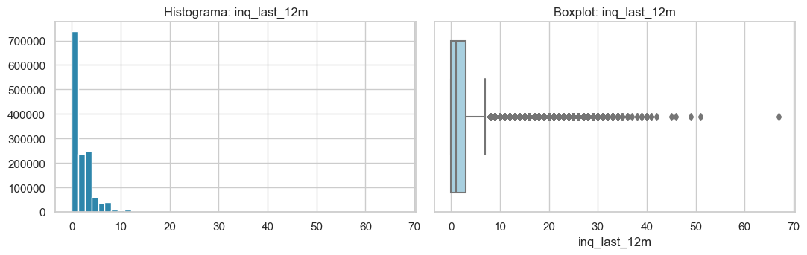
Q1=0.00 | mediana=1.00 | Q3=3.00 | IQR=3.00
Outliers (regla IQR): 47,487 de 1,394,538 (3.41%)
Asimetría: 2.41 — No normal / asimétrica -> considerar log o Box-Cox
Faltantes: 866,163 (38.31%) — Evaluar imputación avanzada (30%-70%)
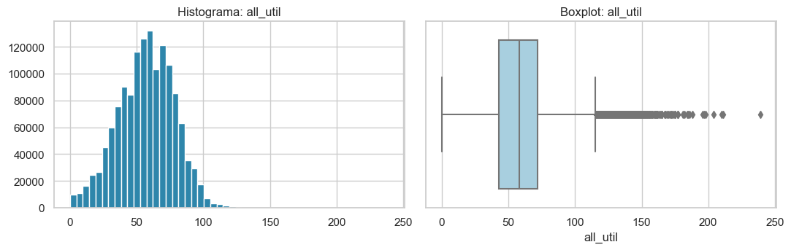
Q1=43.00 | mediana=58.00 | Q3=72.00 | IQR=29.00
Outliers (regla IQR): 3,211 de 1,394,320 (0.23%)
Asimetría: -0.12 — Aproximadamente normal (|skew|<=1)
Faltantes: 866,381 (38.32%) — Evaluar imputación avanzada (30%-70%)
Variable cat#
# Un gráfico de barras horizontales por variable categórica, con el top 20 de categorías más frecuentes
# (si hay más de 20, se recorta para que el gráfico siga siendo legible; el título indica el total real).
for col in categorical_cols_top:
vc = df[col].value_counts(dropna=True).head(20)
if vc.empty:
continue
plt.figure(figsize=(8, max(3, 0.3 * len(vc))))
vc.plot(kind="barh", color="#2E86AB")
plt.title(f"Distribución de {col} (top 20 de {df[col].nunique()} categorías)")
plt.xlabel("Frecuencia")
plt.gca().invert_yaxis() # para que la categoría más frecuente quede arriba, no abajo
plt.tight_layout()
plt.show()
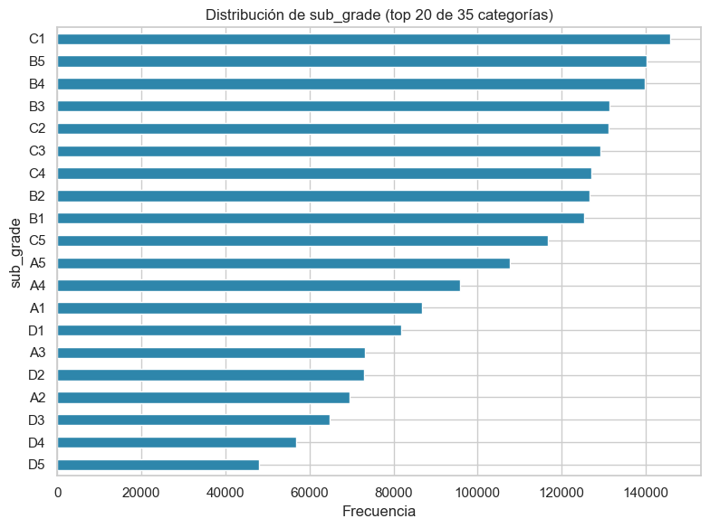
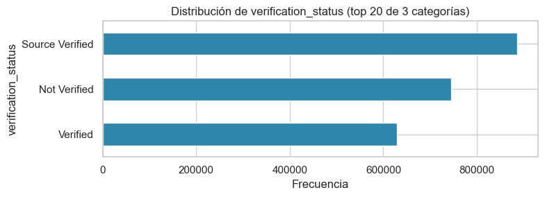
1. Distribución de variables categóricas#
sub_grade muestra una distribución relativamente pareja entre B y C (los 9 subgrados más frecuentes concentran ~53% del dataset), con caída gradual hacia A y D. verification_status está repartida en tercios similares (39% Source Verified, 33% Not Verified, 28% Verified), sin una categoría dominante.
# La muestra se utiliza exclusivamente para visualización. Los cálculos estadísticos y el modelado utilizan el dataset completo.
# Boxplot (con TODOS los datos) + violin plot (con una muestra, solo para que el dibujo sea manejable)
# de cada variable numérica, separada por clase de default.
for col in numeric_cols_top:
temp = df[[col, "default"]].copy()
temp[col] = pd.to_numeric(temp[col], errors="coerce")
temp = temp.dropna()
if temp.shape[0] < 10 or temp["default"].nunique() < 2:
continue
fig, axes = plt.subplots(1, 2, figsize=(12, 4))
sns.boxplot(data=temp, x="default", y=col, ax=axes[0]) # usa el dataset completo (temp), sin muestreo
axes[0].set_title(f"{col} por default — boxplot")
# Violin: la muestra se utiliza exclusivamente para visualización. Los cálculos estadísticos y el
# modelado utilizan el dataset completo (el boxplot de la izquierda y las pruebas de arriba usan todas las filas).
vis = temp.sample(n=min(30_000, len(temp)), random_state=RANDOM_STATE)
sns.violinplot(data=vis, x="default", y=col, ax=axes[1], cut=0)
axes[1].set_title(f"{col} por default — violin (muestra de dibujo)")
plt.tight_layout()
plt.show()
plt.close(fig) # libera memoria de la figura antes de pasar a la siguiente variable
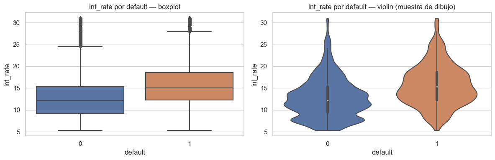
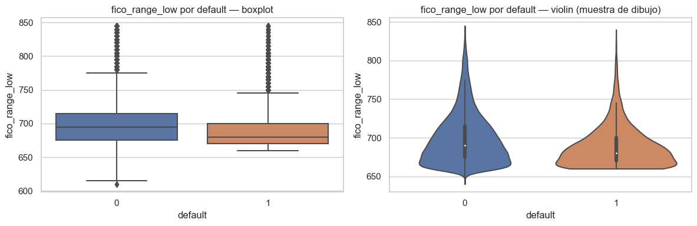
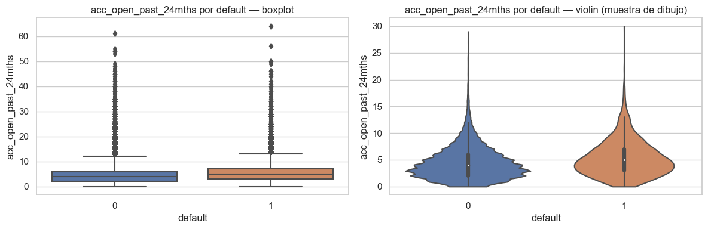
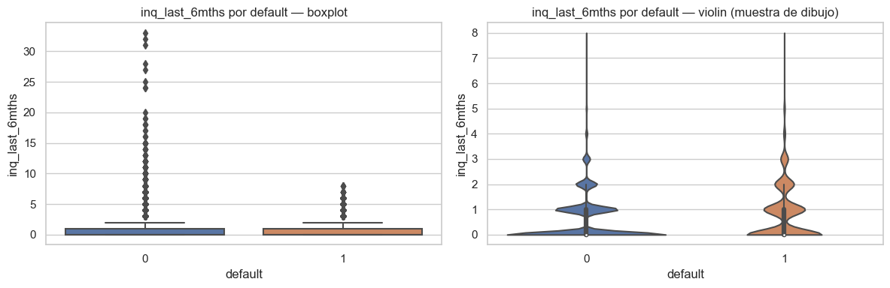
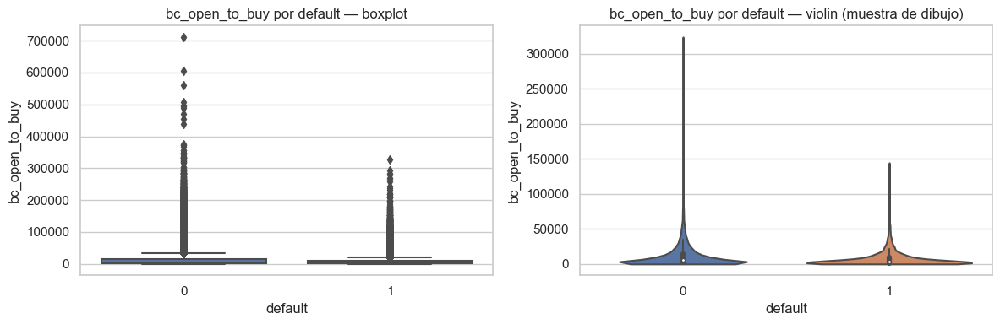
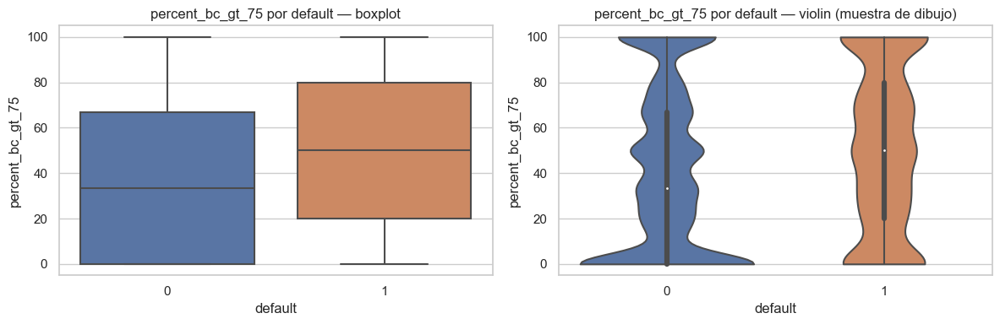
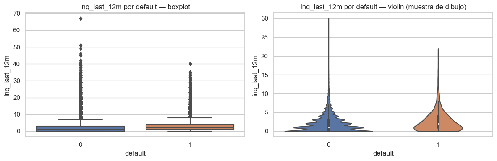
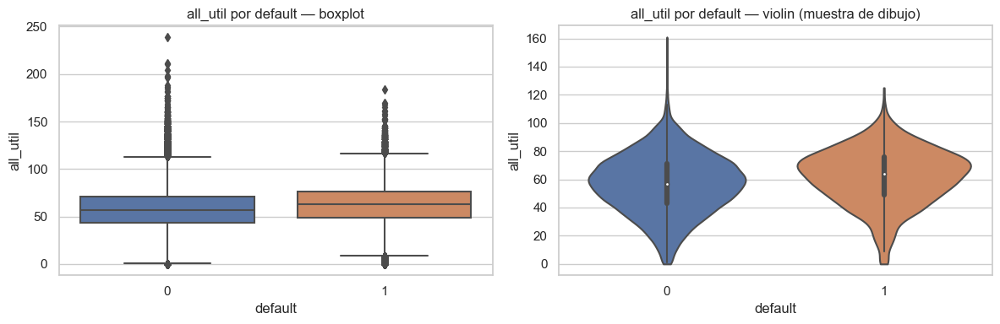
2. Variables numéricas por clase de default#
Al separar las numéricas por clase de default, cuatro variables muestran un desplazamiento visible y consistente entre boxplot y violin: int_rate y percent_bc_gt_75 son más altas en los préstamos que terminan en Charged Off, mientras que fico_range_low y bc_open_to_buy son más bajas — es decir, tasas más altas, tarjetas más cerca del límite, peor score de crédito y menos cupo disponible se asocian con mayor riesgo, en la dirección que la intuición de negocio esperaría. Las cuatro restantes (acc_open_past_24mths, inq_last_6mths, inq_last_12m, all_util) muestran el mismo sentido de desplazamiento pero mucho más leve, con las distribuciones de ambas clases casi superpuestas.
# Gráfico de barras apiladas por variable categórica: para cada una de sus top-20 categorías, qué
# proporción de préstamos son default=0 (azul) vs default=1 (rojo). Reutiliza 'rate' de la celda anterior.
for col in categorical_cols_top:
rate = crosstabs_categoricas.get(col)
if rate is None:
continue
top = df[col].fillna("Missing").astype(str).value_counts().head(20).index
plot_ct = rate.loc[rate.index.isin(top)]
fig = plt.figure(figsize=(10, max(4, 0.3 * len(plot_ct))))
plot_ct.plot(kind="bar", stacked=True, ax=plt.gca(), color=["#2E86AB", "#D1495B"])
plt.title(f"Proporción de default por {col} (top 20 categorías)")
plt.ylabel("Proporción")
plt.legend(title="default", labels=["0 - No Charged Off", "1 - Charged Off"])
plt.tight_layout()
plt.show()
plt.close(fig)
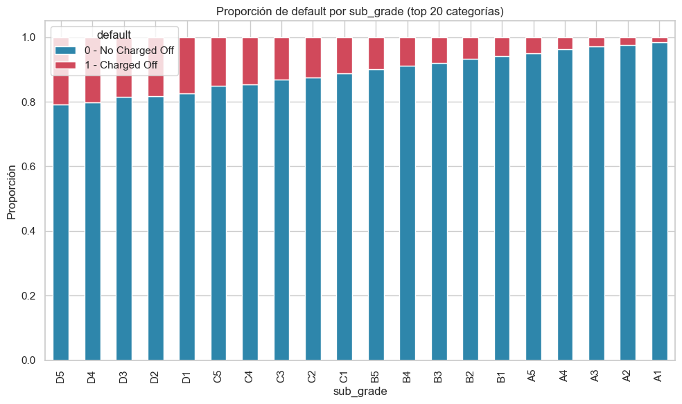
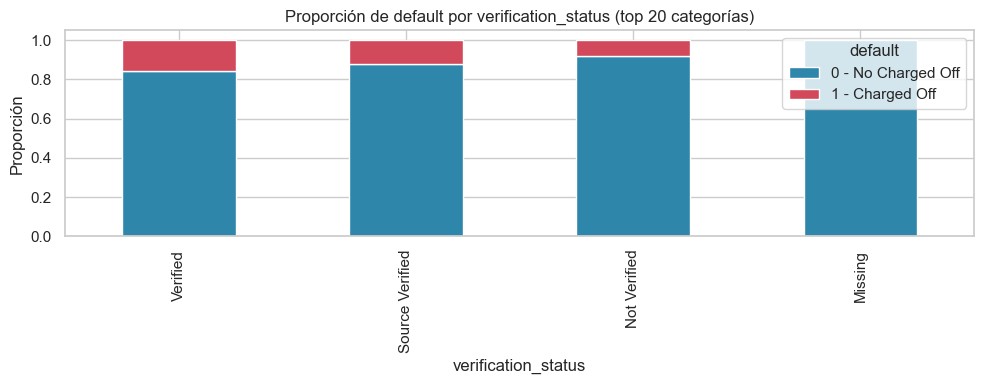
Visualizaciones avanzadas#
Se seleccionan las 5-6 variables numéricas más asociadas con default (mayor |correlación punto-biserial|,
sección anterior) para el KDE, el scatter matrix y el pairplot.
El KDE se calcula con todas las filas.
El scatter matrix y el pairplot no son viables con más de un millón de puntos por panel, así que usan una muestra temporal y desechable.
La muestra se utiliza exclusivamente para visualización. Los cálculos estadísticos y el modelado utilizan el dataset completo.
dfno se modifica (se verifica al final de la celda).
# Visualizaciones avanzadas (1/2): se usan las variables NUMÉRICAS del top 10 ya seleccionado
# (numeric_cols_top), no un top aparte, para mantener consistencia con la selección final de variables.
top_numericas_viz = numeric_cols_top
print(f"Variables seleccionadas para las visualizaciones avanzadas: {top_numericas_viz}")
# --- KDE por clase (con todos los datos, sin muestreo) ---
# Un panel por variable, con dos curvas de densidad superpuestas (default=0 y default=1).
fig, axes = plt.subplots(1, len(top_numericas_viz), figsize=(4 * len(top_numericas_viz), 3.2))
axes = np.atleast_1d(axes) # por si solo hay 1 variable, subplots devuelve un único Axes en vez de un array
for ax, col in zip(axes, top_numericas_viz):
s = pd.to_numeric(df[col], errors="coerce")
lo, hi = s.quantile([0.005, 0.995]) # recorta el 0.5% de cada extremo para que un outlier no aplaste la escala
for k, color in ((0, "#2E86AB"), (1, "#D1495B")):
vals = s[df["default"] == k].dropna()
vals = vals[(vals >= lo) & (vals <= hi)]
sns.kdeplot(vals, ax=ax, color=color, label=CLASS_LABELS[k], fill=True, alpha=0.3, warn_singular=False)
ax.set_title(col, fontsize=9)
axes[0].legend(fontsize=8)
fig.suptitle("KDE por clase (rango p0.5-p99.5)", y=1.03)
plt.tight_layout()
plt.show()
Variables seleccionadas para las visualizaciones avanzadas: ['int_rate', 'fico_range_low', 'acc_open_past_24mths', 'inq_last_6mths', 'bc_open_to_buy', 'percent_bc_gt_75', 'inq_last_12m', 'all_util']
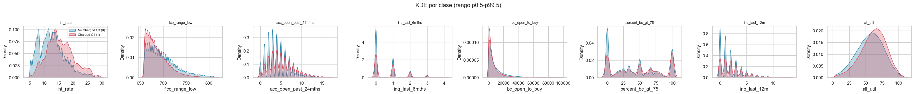
3. Distribución KDE por clase de default#
Las curvas de densidad confirman lo observado en los boxplots/violines: int_rate, fico_range_low y percent_bc_gt_75 muestran curvas claramente desplazadas entre las dos clases, mientras que acc_open_past_24mths, inq_last_6mths, bc_open_to_buy, inq_last_12m y all_util muestran curvas prácticamente superpuestas, con solo un ligero corrimiento hacia valores más altos (o más bajos, según el caso) en la clase Charged Off.
# Visualizaciones avanzadas (2/2): scatter matrix y pairplot. Ambos son costosos de dibujar con millones
# de puntos, así que aquí SÍ se usa una muestra (PAIRPLOT_SAMPLE_SIZE filas) — pero solo para el dibujo:
# 'df' (el dataset completo) no se modifica, y se verifica al final que sigue teniendo el mismo tamaño.
PAIRPLOT_SAMPLE_SIZE = 15_000
rows_before = len(df)
tmp = df[top_numericas_viz + ["default"]].dropna()
# La muestra se utiliza exclusivamente para visualización. Los cálculos estadísticos y el modelado utilizan el dataset completo.
tmp = tmp.sample(n=min(PAIRPLOT_SAMPLE_SIZE, len(tmp)), random_state=RANDOM_STATE)
tmp["clase"] = tmp["default"].map(CLASS_LABELS)
# --- Scatter matrix (máximo 5 variables, para que la matriz siga siendo legible) ---
# Matriz de dispersión: cada celda fuera de la diagonal es un scatter entre dos variables, coloreado por clase;
# la diagonal muestra un histograma de cada variable.
scatter_vars = top_numericas_viz[:5]
axarr = pd.plotting.scatter_matrix(tmp[scatter_vars], c=tmp["default"].map({0: "#2E86AB", 1: "#D1495B"}),
figsize=(2.4 * len(scatter_vars), 2.4 * len(scatter_vars)),
diagonal="hist", alpha=0.35, s=8)
plt.suptitle("Scatter matrix (muestra temporal, no afecta a df)", y=1.02)
plt.show()
# --- Pairplot (todas las numéricas del top 10) ---
# Similar al scatter matrix pero de seaborn: además separa por color ('hue') según la clase y permite
# 'corner=True' para no repetir cada par de variables dos veces (arriba y abajo de la diagonal).
sns.pairplot(tmp, vars=top_numericas_viz, hue="clase", corner=True, diag_kind="hist",
plot_kws=dict(alpha=0.3, s=10))
plt.suptitle("Pairplot de variables numéricas relevantes por default (muestra temporal)", y=1.02)
plt.show()
del tmp # se descarta la muestra temporal explícitamente, ya cumplió su único propósito (graficar)
assert len(df) == rows_before, "El DataFrame principal no debe cambiar de tamaño."
print(f"Verificación: df sigue con {len(df):,} filas; la muestra temporal ya fue descartada.")
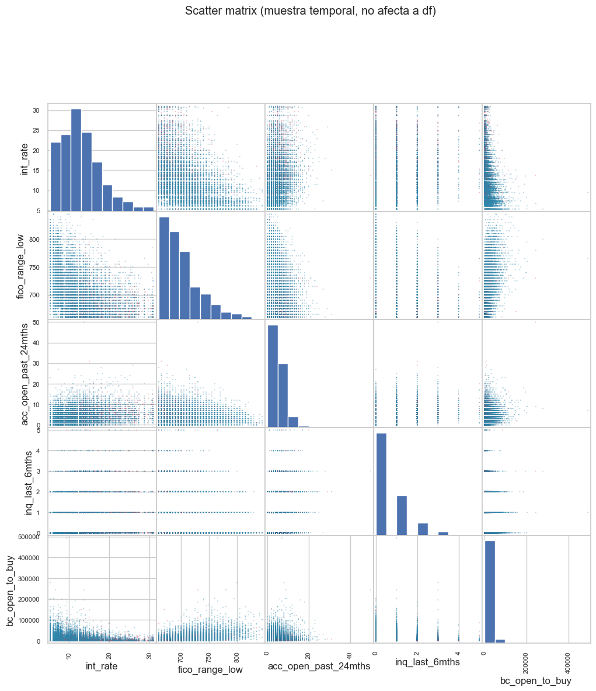
c:\Users\juand\miniconda3\envs\ml_venv\lib\site-packages\seaborn\axisgrid.py:118: UserWarning: The figure layout has changed to tight
self._figure.tight_layout(*args, **kwargs)
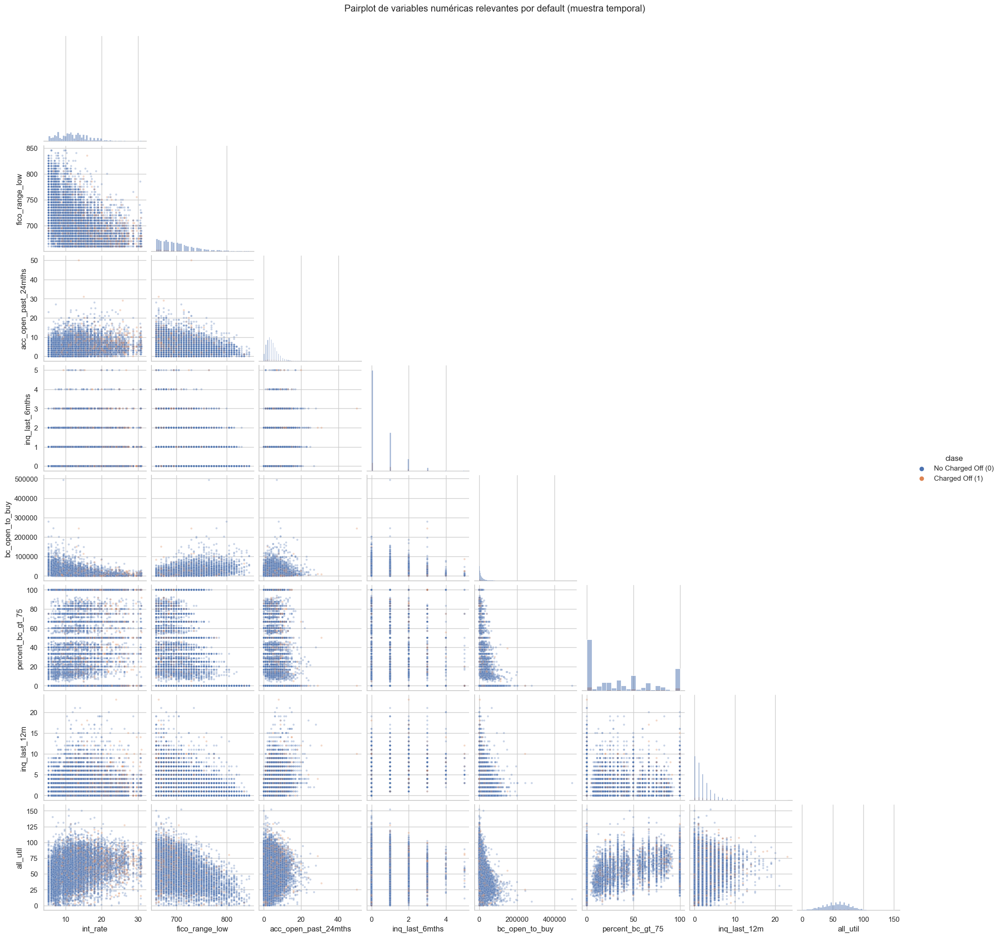
Verificación: df sigue con 2,260,701 filas; la muestra temporal ya fue descartada.
4. Scatter matrix y 5. Pairplot#
Ninguna combinación de dos variables muestra una separación limpia entre clases: el traslape es sustancial en todas las vistas bivariadas, consistente con que ninguna asociación individual con default supera 0.23 (sección de selección de variables). Esto indica que el riesgo de impago no se explica por una sola variable ni por la interacción simple de dos de ellas.
Implicaciones para el modelado#
Dado que ninguna variable (ni par de variables) separa las clases por sí sola, el poder predictivo del modelo dependerá de combinar las 10 variables y de que el algoritmo pueda capturar relaciones no necesariamente lineales entre ellas lo que favorece el uso de modelos de árboles/ensamble (Random Forest, Gradient Boosting) además de la regresión logística de referencia, y refuerza que la evaluación se apoye en ROC-AUC/AUC-PR y no en accuracy simple, dado el desbalance de clases. Adicionalmente, la asimetría marcada y las colas largas observadas en bc_open_to_buy, inq_last_6mths/inq_last_12m y acc_open_past_24mths. Se confirman visualmente en el boxplot y el KDE, y se tendrán en cuenta especialmente para los modelos lineales (regresión logística, SVM), que son más sensibles a la forma de la distribución que los modelos basados en árboles.
# ¿Faltan en las mismas filas?
m1 = df["inq_last_12m"].isna()
m2 = df["all_util"].isna()
tabla_conjunta = pd.crosstab(m1, m2, rownames=["falta_inq_last_12m"], colnames=["falta_all_util"])
print("Tabla de coincidencia de faltantes:")
display(tabla_conjunta)
solapamiento = (m1 & m2).sum()
print(f"Filas donde faltan AMBAS: {solapamiento:,} "
f"({100*solapamiento/len(df):.2f}% del dataset)")
print(f"Faltan en inq_last_12m pero no en all_util: {(m1 & ~m2).sum():,}")
print(f"Faltan en all_util pero no en inq_last_12m: {(~m1 & m2).sum():,}")
# ¿Ese patrón de faltante está asociado con default? (mismo criterio que missing_assoc del EDA)
for col, m in [("inq_last_12m", m1), ("all_util", m2)]:
tasa_falta = df.loc[m, "default"].mean()
tasa_presente = df.loc[~m, "default"].mean()
tabla_2x2 = pd.crosstab(m, df["default"])
chi2, p, _, _ = stats.chi2_contingency(tabla_2x2)
print(f"\n{col}: tasa default si falta = {100*tasa_falta:.2f}% | "
f"tasa default si presente = {100*tasa_presente:.2f}% | "
f"diferencia = {100*(tasa_falta - tasa_presente):+.2f} pp | p={p:.2e}")
Tabla de coincidencia de faltantes:
| falta_all_util | False | True |
|---|---|---|
| falta_inq_last_12m | ||
| False | 1394319 | 219 |
| True | 1 | 866162 |
Filas donde faltan AMBAS: 866,162 (38.31% del dataset)
Faltan en inq_last_12m pero no en all_util: 1
Faltan en all_util pero no en inq_last_12m: 219
inq_last_12m: tasa default si falta = 17.14% | tasa default si presente = 8.61% | diferencia = +8.53 pp | p=0.00e+00
all_util: tasa default si falta = 17.14% | tasa default si presente = 8.61% | diferencia = +8.52 pp | p=0.00e+00
Síntesis final#
# 9.10.4.1.5 (parte 3) — Síntesis final del EDA: recopila las cifras clave calculadas en todo el
# notebook (calidad de datos, variables prometedoras, problemas detectados) y las imprime como un
# resumen ejecutivo legible, listo para copiar en el informe.
tasa_default_global = 100 * df["default"].mean()
n_eliminar = int((missing_summary["pct_missing"] > 70).sum())
n_imputar_avanzado = int(((missing_summary["pct_missing"] > 30) & (missing_summary["pct_missing"] <= 70)).sum())
n_imputar_simple = int(((missing_summary["pct_missing"] > 0) & (missing_summary["pct_missing"] <= 30)).sum())
outliers_altos = numeric_summary[numeric_summary["outliers_IQR_pct"] > 5].index.tolist()
print("=== RESUMEN EJECUTIVO DEL EDA ===\n")
print("1. CALIDAD DE LOS DATOS")
print(f"- Dataset: {df.shape[0]:,} filas x {df.shape[1]} columnas.")
print(f"- {n_eliminar} columnas con >70% de faltantes (candidatas a eliminación).")
print(f"- {n_imputar_avanzado} columnas entre 30% y 70% de faltantes (evaluar imputación avanzada).")
print(f"- {n_imputar_simple} columnas con <30% de faltantes (imputación simple).")
print(f"- {len(columnas_leakage)} columnas marcadas como posible leakage (información posterior a la originación).")
print(f"- id y member_id excluidas del análisis por ser identificadores sin valor predictivo.")
print(f"- Target: se sigue literalmente la regla del enunciado (1 = Charged Off, 0 = No Charged Off). La clase 0 "
f"incluye Fully Paid, Current, Late, In Grace Period, etc.; no se elimina ningún estado.\n")
print("2. VARIABLES MÁS PROMETEDORAS PARA PREDECIR DEFAULT")
for _, row in seleccion_final.iterrows():
print(f" - {row['variable']} ({row['tipo']}): {row['metrica']} = {row['valor_metrica']:.3f}, p={row['p_value']:.2e}")
print()
print("3. PROBLEMAS DETECTADOS")
tasa_min = min(tasa_default_global, 100 - tasa_default_global)
print(f"- Desbalance de clases: {tasa_default_global:.2f}% Charged Off vs {100 - tasa_default_global:.2f}% No Charged Off "
f"({'desbalance relevante' if tasa_min < 20 else 'desbalance moderado'}).")
print(f"- {len(pares_alta_corr_df)} pares numéricos con |Pearson r| > {CORR_THRESHOLD} (multicolinealidad).")
print(f"- {len(pares_alta_asociacion_cat_df)} pares categóricos con V de Cramér > {CORR_THRESHOLD}.")
print(f"- {len(outliers_altos)} variables numéricas con más de 5% de outliers según IQR.")
print(f"- {int(missing_assoc['asociacion_relevante'].sum())} variables cuyo indicador de faltante se asocia con default "
f"(|diferencia| >= {UMBRAL_DIF_MISSING} y p < 0.05; diagnóstico descriptivo, no prueba formal de MCAR).\n")
print("4. DECISIONES PRELIMINARES PARA EL PREPROCESAMIENTO")
print(f"- Variables candidatas principales: {', '.join(seleccion_final['variable'].tolist())}.")
print("- Excluir permanentemente: id, member_id, loan_status, las columnas de leakage y las categóricas de")
print(" cardinalidad extrema (identificadores, texto libre).")
print("- Evaluar transformación log/Box-Cox en variables numéricas con |skew| > 1.")
print("- Aplicar estratificación por default en la partición train/test dado el desbalance observado.")
print("- Definir imputación por variable según la tabla de la sección 9.10.4.1.4 (mediana / moda / 'Missing' / eliminar).")
print("- emp_length se usa en el modelado como numérica (emp_length_num: '< 1 year' -> 0.5, '10+ years' -> 10).")
# Tabla final que junta la selección de variables con su % de faltantes, para tenerlo todo en un solo lugar.
resumen_ejecutivo_df = seleccion_final.merge(
missing_summary[["variable", "pct_missing"]], on="variable", how="left")
display(resumen_ejecutivo_df)
=== RESUMEN EJECUTIVO DEL EDA ===
1. CALIDAD DE LOS DATOS
- Dataset: 2,260,701 filas x 153 columnas.
- 40 columnas con >70% de faltantes (candidatas a eliminación).
- 17 columnas entre 30% y 70% de faltantes (evaluar imputación avanzada).
- 93 columnas con <30% de faltantes (imputación simple).
- 36 columnas marcadas como posible leakage (información posterior a la originación).
- id y member_id excluidas del análisis por ser identificadores sin valor predictivo.
- Target: se sigue literalmente la regla del enunciado (1 = Charged Off, 0 = No Charged Off). La clase 0 incluye Fully Paid, Current, Late, In Grace Period, etc.; no se elimina ningún estado.
2. VARIABLES MÁS PROMETEDORAS PARA PREDECIR DEFAULT
- sub_grade (categórica): V de Cramér = 0.227, p=0.00e+00
- int_rate (numérica): |correlación punto-biserial| = 0.199, p=0.00e+00
- fico_range_low (numérica): |correlación punto-biserial| = 0.119, p=0.00e+00
- verification_status (categórica): V de Cramér = 0.095, p=0.00e+00
- acc_open_past_24mths (numérica): |correlación punto-biserial| = 0.093, p=0.00e+00
- inq_last_6mths (numérica): |correlación punto-biserial| = 0.083, p=0.00e+00
- bc_open_to_buy (numérica): |correlación punto-biserial| = 0.082, p=0.00e+00
- percent_bc_gt_75 (numérica): |correlación punto-biserial| = 0.076, p=0.00e+00
- inq_last_12m (numérica): |correlación punto-biserial| = 0.071, p=0.00e+00
- all_util (numérica): |correlación punto-biserial| = 0.068, p=0.00e+00
3. PROBLEMAS DETECTADOS
- Desbalance de clases: 11.88% Charged Off vs 88.12% No Charged Off (desbalance relevante).
- 76 pares numéricos con |Pearson r| > 0.7 (multicolinealidad).
- 70 pares categóricos con V de Cramér > 0.7.
- 34 variables numéricas con más de 5% de outliers según IQR.
- 97 variables cuyo indicador de faltante se asocia con default (|diferencia| >= 0.02 y p < 0.05; diagnóstico descriptivo, no prueba formal de MCAR).
4. DECISIONES PRELIMINARES PARA EL PREPROCESAMIENTO
- Variables candidatas principales: sub_grade, int_rate, fico_range_low, verification_status, acc_open_past_24mths, inq_last_6mths, bc_open_to_buy, percent_bc_gt_75, inq_last_12m, all_util.
- Excluir permanentemente: id, member_id, loan_status, las columnas de leakage y las categóricas de
cardinalidad extrema (identificadores, texto libre).
- Evaluar transformación log/Box-Cox en variables numéricas con |skew| > 1.
- Aplicar estratificación por default en la partición train/test dado el desbalance observado.
- Definir imputación por variable según la tabla de la sección 9.10.4.1.4 (mediana / moda / 'Missing' / eliminar).
- emp_length se usa en el modelado como numérica (emp_length_num: '< 1 year' -> 0.5, '10+ years' -> 10).
| variable | tipo | metrica | valor_metrica | p_value | pct_missing | |
|---|---|---|---|---|---|---|
| 0 | sub_grade | categórica | V de Cramér | 0.227241 | 0.0 | 0.001460 |
| 1 | int_rate | numérica | |correlación punto-biserial| | 0.198918 | 0.0 | 0.001460 |
| 2 | fico_range_low | numérica | |correlación punto-biserial| | 0.119437 | 0.0 | 0.001460 |
| 3 | verification_status | categórica | V de Cramér | 0.094978 | 0.0 | 0.001460 |
| 4 | acc_open_past_24mths | numérica | |correlación punto-biserial| | 0.093171 | 0.0 | 2.214490 |
| 5 | inq_last_6mths | numérica | |correlación punto-biserial| | 0.083363 | 0.0 | 0.002787 |
| 6 | bc_open_to_buy | numérica | |correlación punto-biserial| | 0.082013 | 0.0 | 3.316140 |
| 7 | percent_bc_gt_75 | numérica | |correlación punto-biserial| | 0.076392 | 0.0 | 3.335779 |
| 8 | inq_last_12m | numérica | |correlación punto-biserial| | 0.071265 | 0.0 | 38.313912 |
| 9 | all_util | numérica | |correlación punto-biserial| | 0.067825 | 0.0 | 38.323555 |
Interpretación del resumen ejecutivo#
El dataset final cuenta con 2.260.701 filas y 153 columnas, un volumen grande que exige trabajar con toda la muestra (sin sampling) para no perder representatividad, tal como establece el enunciado. El desbalance de clases es marcado: solo 11.88% de los préstamos terminan en Charged Off frente a 88.12% que no, lo que descarta usar accuracy como métrica de evaluación y obliga a estratificar la partición train/test y a apoyarse en ROC-AUC, AUC-PR, precision y recall de la clase minoritaria durante el modelado.
De las 153 columnas originales, 36 se identificaron como posible data leakage (información posterior a la originación del préstamo) y se excluyeron por completo, junto con id, member_id, loan_status y las categóricas de cardinalidad extrema. En cuanto a faltantes, 40 columnas superan el 70% (candidatas a eliminación) y 17 caen en el rango 30%-70% (requieren imputación avanzada o indicador de faltante); de estas últimas, dos entraron al top 10 de variables prometedoras (inq_last_12m y all_util, ~38% de faltantes cada una) precisamente porque su patrón de faltante resultó fuertemente informativo sobre default — hallazgo que también refleja el resultado más amplio de que 97 variables del dataset muestran un indicador de missingness asociado al target, así que el tratamiento de faltantes no es un detalle secundario en este dataset, sino parte del poder predictivo.
La multicolinealidad es alta a nivel global (76 pares numéricos con |Pearson r|>0.7 y 70 pares categóricos con V de Cramér>0.7), lo que confirma que reducir a un conjunto pequeño y no redundante de variables —como se hizo con el filtro iterativo de redundancia— es necesario antes de modelar, más allá de dejarlo a criterio del algoritmo. Las 10 variables que sobrevivieron todos los filtros (sub_grade, int_rate, fico_range_low, verification_status, acc_open_past_24mths, inq_last_6mths, bc_open_to_buy, percent_bc_gt_75, inq_last_12m, all_util) tienen asociaciones individuales modestas con el target (entre 0.068 y 0.227), lo cual es esperable en riesgo crediticio: ninguna variable aislada explica el impago, y el valor del modelo estará en combinar estas 10 señales —relacionadas con el perfil crediticio (grado, tasa, score) y la actividad crediticia reciente del solicitante— más que en depender de un único predictor dominante. Finalmente, 34 variables numéricas muestran más de 5% de outliers según IQR, que se documentan pero no se eliminan (se conservan como parte de la variabilidad real del riesgo crediticio), reservando la transformación log/Box-Cox solo para las que además muestran asimetría alta (|skew|>1).